Executive summary
This is a genuinely good fractal explorer wrapped in an unfinished application. The parts
that touch the fractal directly — the canvas, the gestures, the palettes, the Julia companion, the
Mac movie dialog — are excellent and in places better than commercial equivalents. Almost everything
that surrounds them is a single generic SwiftUI Form inside a NavigationStack,
shipped unchanged to both platforms, and on the Mac that shared chrome is visibly broken.
What already works well
- The fractal is the hero. On both platforms the canvas is edge to edge, the chrome is a single translucent cluster, and nothing competes with the image. Launching the app and pinching is exactly the experience the vision document asks for.
- Direct manipulation is first class. One transform solves pan, zoom and rotate together from the raw touches, so the point under each finger stays pinned; the Mac gets trackpad pinch, twist, scroll-to-zoom-at-pointer, shift-drag framing and inertial flings. This is the hardest part of the product and it is done properly.
- The Julia companion on macOS is a delight. The crosshair follows the pointer and the companion re-renders live. It makes the relationship between the two sets tangible in a way few apps manage.
- The Mac Zoom Movie dialog is a model of what the rest of the app should look like — a real dialog with a title, cards, thumbnails of both endpoints, a live low-resolution preview movie you can scrub, an editable journey timeline, measured statistics, a help popover, and Cancel / default-button footer that swaps cleanly between settings, rendering and completion states.
- The help content is unusually good. Every toolbar button is defined once together with the sentence that explains it, so a button cannot exist without an explanation, and the same sentence is the Mac tooltip, the iOS accessibility hint and the row in Controls.
The major themes needing work
- One shared sheet chrome, used unchanged on macOS. Places, Settings, Controls, Developer and
Benchmarks are all
NavigationStack { Form }.toolbar { Button("Done") }. On the Mac this produces a fixed ~380 pt panel that ignores the window, puts Done at the bottom left, offers no Cancel and no default button, does not respond to Escape, clips its content, and renders section headers as unstyled body text. One cause, five screens, a dozen symptoms. - The iPhone Zoom Movie sheet is a different, much weaker product than the Mac one — a different route model (direct descent only), no preview, no endpoint thumbnails, no minimum-duration guard, no completion confirmation, and its settings stay fully interactive while a render is running.
- The app never tells you where you are. There is no zoom or coordinate readout anywhere in the exploration view on either platform; the only place to find it is inside the Places sheet, which covers the view you are asking about.
- Success is silent. Bookmarking gives no acknowledgement at all, and finishing a movie on iPhone gives none either. These are the two classic “did that work?” moments in the app.
- Accessibility falls over at large text sizes and the fractal itself is invisible to VoiceOver on both platforms.
- Half the shareable product is missing. There is no still-image export in the UI on either
platform (only in the headless CLI), and Share shares a raw
mandelbrot://URL that nobody without the app can open.
Issue counts
These are the deduplicated actionable items in Prioritised recommendations. The per-section Priority lists total 2 / 34 / 44 because a systemic issue is flagged in every screen it shows up in; the recommendations collapse those to one item each.
| Priority | Count | Character |
|---|---|---|
| P0 | 2 | Visibly broken settings layout on macOS; accessibility text sizes destroy the iPhone controls. |
| P1 | 28 | Platform conventions, missing feedback, cross-platform divergence, accessibility, missing export. |
| P2 | 26 | Microcopy, formatting, spacing, icon choices, estimate accuracy, transitions. |
The systemic finding
Roughly two thirds of the individual P1/P2 items resolve to four systemic causes: the shared sheet
chrome, the absence of a form-layout convention on macOS, an unspecified slider/label pattern, and an
unspecified way of formatting a zoom scale (this audit observed the same quantity printed as
1.0, 1×, 4e3×, 4000.0, 4,000× and
2.0000000000000004e9×). Fixing those four things once is worth more than fixing the
symptoms screen by screen — see Design-system findings.
Application map
Everything below was located by reading the view composition and navigation paths, then confirmed by running the app. Items marked not exercised could not be reached in this session and are reviewed from source only.
| Area | macOS | iPhone | Source |
|---|---|---|---|
| Main exploration canvas | ✓ | ✓ | ContentView, ViewerView, GPUCanvas |
| Input surface (pan/zoom/rotate/select/marker) | ✓ | ✓ | PlatformInput |
| Window toolbar (10 items) | ✓ | — | ContentView.toolbar |
| Floating control cluster (6–7 items) | — | ✓ | ContentView.overlay |
| Toolbar overflow menu | ✓ | — | AppKit |
| Explore menu, File menu, app menu | ✓ | — | ExplorerCommands |
| Keyboard shortcuts (21 commands) | ✓ | hardware kbd | ExplorerCommand |
| Rotation compass + Upright toolbar item | ✓ | ✓ (source) | RotationCompass |
| Julia companion — side-by-side | ✓ | — | CompanionPanel |
| Julia companion — corner inset | — | ✓ | CompanionPanel |
| Julia crosshair marker / pinning | ✓ | ✓ | JuliaMarker |
| Julia swapped mode | ✓ (source) | ✓ | MandelbrotThumbnail |
| Places — empty bookmarks | ✓ | ✓ | PlacesView |
| Places — populated | ✓ | ✓ | PlacesView |
| Bookmark creation (sheet field, ⌘D, toolbar) | ✓ | ✓ | ExplorerModel.bookmarkCurrentView |
| Swipe-to-delete a bookmark | n/a | not exercised | PlacesView.onDelete |
| Share link (system share sheet) | ✓ | ✓ (entry point) | ShareLink |
| Settings — Colour | ✓ | ✓ | AppearanceView |
| Settings — Detail | ✓ | ✓ | AppearanceView |
| Settings — Julia companion | ✓ | ✓ | AppearanceView |
| Settings — About + 7-tap unlock | ✓ | ✓ | AppearanceView |
| Acknowledgements | ✓ | ✓ (equivalent) | AcknowledgementsView |
| Controls (help) | ✓ | ✓ | HelpView, HelpContent |
| Zoom Movie — journey card, endpoint thumbnails | ✓ | — (no equivalent) | MovieSheetMac |
| Zoom Movie — live journey preview | ✓ | — (no equivalent) | JourneyPreviewRenderer |
| Zoom Movie — Edit Journey timeline + overview slider | ✓ | — (no equivalent) | MovieSheetMac.timeline |
| Zoom Movie — settings & statistics | ✓ | ✓ (reduced) | MovieSheetMac / MovieView |
| Zoom Movie — output folder picker | ✓ | — (share sheet only) | MovieLibrary |
| Zoom Movie — help popover | ✓ | — (no equivalent) | MovieSheetMac.explanation |
| Render progress + cancel | ✓ | ✓ | MovieRenderer |
| Render completion / playback / share | ✓ | ✓ (reduced) | both sheets |
| Render failure message | not exercised | not exercised | movies.error |
| Developer panel | ✓ | ✓ (equivalent) | DeveloperPanel |
| Performance HUD + tile overlay | ✓ | ✓ (equivalent) | TileHUD |
| Benchmarks — empty and complete | ✓ | ✓ (equivalent) | BenchmarkView |
| Location error notice | ✓ | ✓ (equivalent) | ContentView |
| Tile failure notice + Retry | not exercised | not exercised | TileFailureNotice |
| “Maximum detail reached” notice | not exercised | not exercised | ContentView |
| Narrow / wide window adaptation | ✓ | — | AppKit + sizeClass |
| Portrait / landscape | — | ✓ | ContentView |
| Dynamic Type at AX5 | — | ✓ | all SwiftUI views |
| App icon / first launch | — | ✓ | asset catalogue |
How this was produced
The macOS app was built Release and driven interactively with real mouse, keyboard and menu input at
a 1280 × 800 window (and at 560 × 620 for the narrow case), captured window-only with
screencapture -l. The iPhone build was installed on an iPhone 17 Pro simulator and driven by
synthesised taps and drags against the live accessibility hierarchy, captured with
xcrun simctl io … screenshot. Every statement below is tagged:
- observed — seen happening in the running app.
- source — read from the code but not reproduced in this session.
- suspected — seen once, not reliably reproduced.
Three pieces of temporary state were used and have been removed: a set of seeded bookmarks written into
the simulator's UserDefaults, and DeveloperToolsUnlocked /
DeveloperMenuEnabled on the Mac. No source file was modified. See
Coverage & limitations.
1. Main exploration view
The app's home. A full-bleed GPU canvas with a translucent control cluster; no chrome, no status bar on iPhone, no sidebar or inspector on Mac.
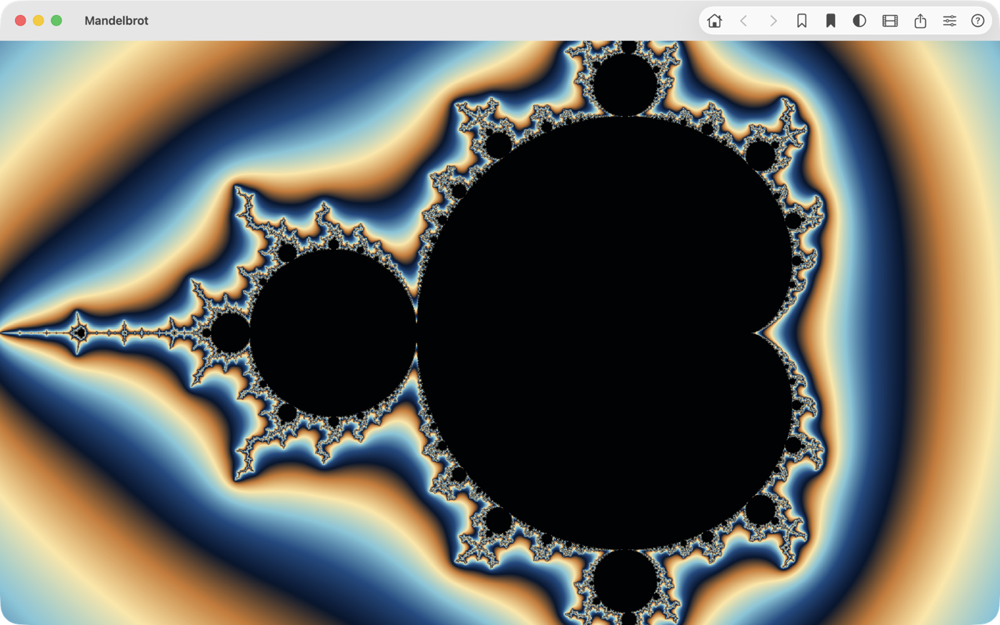
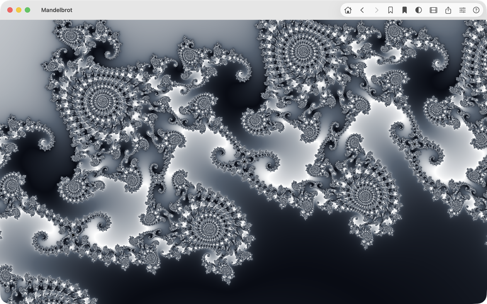
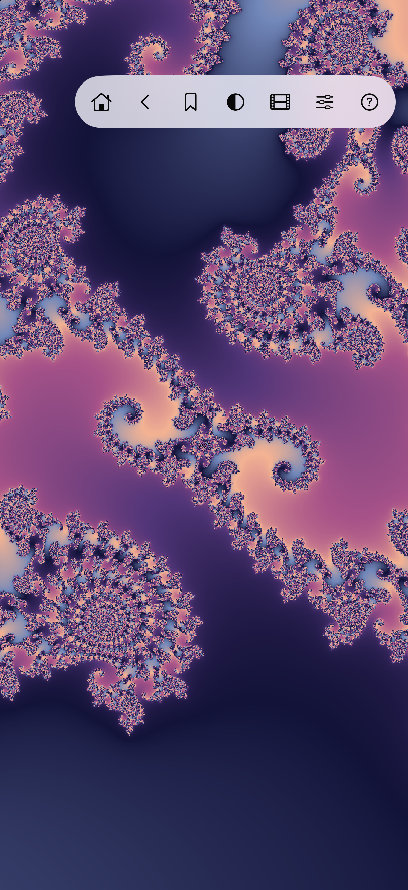
Strengths
- Strength The content-to-chrome ratio is exemplary. On the Mac the toolbar is a single compact glass cluster at the trailing edge; on iPhone it is one capsule. Nothing else is drawn over the fractal at rest. observed
- Strength Rendering quality is the product. Colour is smooth and band-free at every depth reached, refinement fades in rather than popping, and the canvas never showed a blank frame during panning or zooming. observed
- Strength The geometry and input surface share the full drawable area while the controls live in the safe area as siblings, so opening or closing the companion never shifts the camera. This is a deliberate and correct decision. source, confirmed by observation
Concerns / Problems
- Problem There is no location or zoom readout anywhere in the exploration view. After following a shared link to 2×10⁹, nothing on screen says where you are or how deep you have gone. The only readout is Centre / Scale inside the Places sheet — which covers the view. For an app whose entire subject is position and scale, that is the most conspicuous gap in the exploration UI. observed
- Concern Jumping to a place is an instantaneous cut. Choosing Seahorse Valley from Places replaces the screen with no transition at all. The app has the machinery for a continuous camera move — it is exactly what the movie renderer does — but the interactive jump does not use it, so the user loses their sense of where they went. observed
- Concern On iPhone the status bar is hidden
(
.statusBarHidden()). That is defensible for an immersive canvas, but it also removes the clock and battery for the whole session, and the control capsule sits directly under the Dynamic Island where the system would have drawn them. observed - Concern The app does not restore the last viewed location on launch. Three restored Mac windows all opened at the whole set. observed
Recommendations
- Add a persistent, quiet scale readout. On macOS the natural home is the window subtitle
(
.navigationSubtitle), which is exactly what it is for: “−0.743643887037151, 0.13182590420533 · 4,000×”. On iPhone, a single small capsule at the bottom-leading corner showing just the zoom (“4,000×”), tappable to reveal the full coordinates. - Animate jumps to a place and to a bookmark as a short continuous zoom (0.5–0.8 s) rather than a cut, honouring Reduce Motion by falling back to a cross-fade.
- Persist the last viewport in
@SceneStorageso a relaunch returns the user where they were.
Priority
- P1No scale or coordinate readout in the exploration view on either platform. Systemic — affects exploration, bookmarking and movie endpoint selection.
- P2Place/bookmark restoration is a hard cut; no visual continuity.
- P2Last location is not restored on launch.
2. macOS toolbar
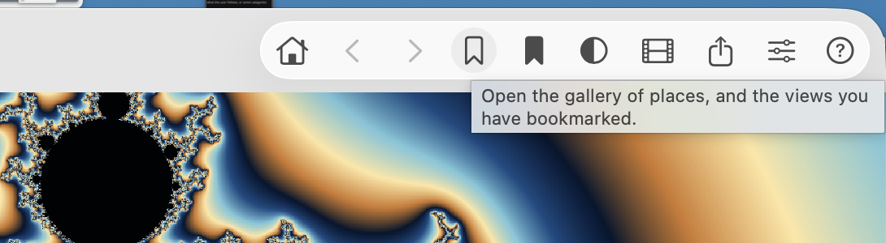
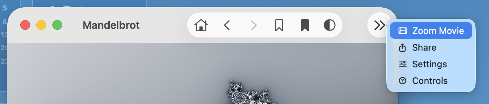
Strengths
- Strength Every button has a helpful, human tooltip — a full sentence, not a repeat of the label, and the same sentence appears in Controls. Hover highlighting is correct. observed
- Strength Back and Forward are properly disabled when there is no history, and the Upright item appears only when the view is rotated. observed
- Strength Overflow at narrow widths works and reveals labels. observed
- Strength All ten items carry accessibility descriptions
(
Reset, Back, Forward, Places, Bookmark, Julia Companion, Zoom Movie, Share, Settings, Controls). observed via the AX tree
Concerns / Problems
- Problem Two near-identical bookmark glyphs sit next to each other.
bookmarkmeans “open Places” andbookmark.fillmeans “bookmark this view”. Filled versus outline is the standard iOS/macOS encoding of state (bookmarked / not bookmarked), not of two different commands. A user will reasonably read the pair as one toggle. observed - Problem Adding a toolbar item shifts every other item. When history becomes available, or the view is rotated, Back/Upright are inserted and the whole cluster slides. Because the cluster is trailing-aligned, the buttons the user has learned the position of all move — and the change is triggered by the very action that precedes the next click. observed on both platforms
- Concern Ten equal-weight icon buttons with no grouping. Navigation
(Reset/Back/Forward/Upright), library (Places/Bookmark), view (Julia), and output (Movie/Share) are four
different families rendered identically, with no
ToolbarItemGroup, no spacer and no.navigationplacement for back/forward. observed - Concern The toolbar is not user-customisable
(
.toolbar(id:)/customizationBehavior), and overflow priority is purely positional, so at narrow widths the app hides Share, Settings and Controls before it hides Forward. observed
Recommendations
- Give the two library actions distinct glyphs. Use
books.verticalorrectangle.grid.2x2for Places (it is a gallery, not a bookmark) and keepbookmark/bookmark.fillas a single item whose fill reflects whether the current view is already bookmarked. - Reserve space for the conditional items, or move Back/Forward to a fixed
ToolbarItemGroup(placement: .navigation)at the leading edge — the Mac convention — so the trailing cluster never moves. - Group the trailing cluster with
ToolbarItemGroupand aToolbarSpacerbetween families, and setcustomizationBehaviorso overflow drops the least important items first.
Priority
- P1Two adjacent bookmark glyphs for two different commands.
- P1Conditional toolbar items reflow the whole cluster. Also affects iPhone.
- P2No grouping or overflow priority among ten equal-weight items.
3. iPhone control cluster
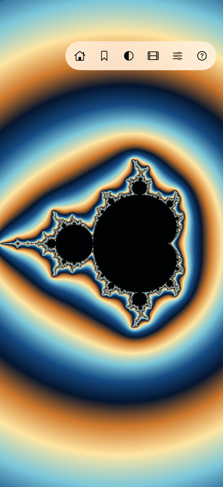
Strengths
- Strength Each button is a genuine 44 × 44 pt target with
.contentShape(Rectangle()), confirmed in the accessibility hierarchy, and each carries a label and a hint. observed - Strength A single capsule of translucent material reads as one object and keeps the image uninterrupted. observed
Concerns / Problems
- Problem The controls are at the top of a large phone. On an iPhone 17 Pro the cluster sits at y ≈ 100 pt — the least reachable part of the screen for a one-handed grip, and the app is explicitly a one-handed, pinch-and-explore product. In landscape it is worse. observed
- Problem Neither Bookmark nor Share exists on iPhone. The Mac has both as toolbar items; on iPhone bookmarking is only reachable by opening Places, scrolling to a text field and tapping a 20 pt-tall button, and sharing only from inside Places. The phone is the platform where people actually share. observed
- Problem The cluster's material is content-dependent. Over the bright orange/gold regions the capsule becomes a pale tan and the dark glyphs are fine; over dark regions it goes near-black and contrast drops. There is no fixed minimum contrast between glyph and backing. observed
- Concern Six to seven unlabelled icons is the app's entire affordance surface on iPhone and there is no way to see their names short of opening Controls. observed
Recommendations
- Move the cluster to the bottom-trailing safe area, mirroring where the companion inset already lives, so both live in the thumb arc. Keep the top clear for the eventual scale readout.
- Add Bookmark and Share to the iPhone cluster. If seven is too many, collapse Settings + Controls into one “…” menu — those are the two the user visits least.
- Reserve the Back slot (render it disabled rather than absent) so positions are stable.
- Give the capsule an explicit minimum-contrast treatment: a fixed
.ultraThinMaterialover a subtle scrim, or a constant tint, rather than letting the fractal dictate legibility.
Priority
- P1Primary controls sit in the hardest-to-reach corner of a large phone.
- P1Bookmark and Share have no iPhone entry point outside a sheet.
- P2Glyph contrast against the capsule varies with the fractal behind it.
4. macOS menus and keyboard
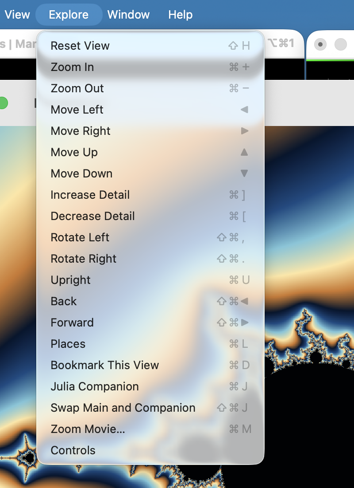
Strengths
- Strength A full command set exists and is defined once, so the Controls sheet, the tooltips and the menu can never drift apart. Most bindings are conventional (⌘+, ⌘−, ⌘D, ⌘J, ⌘M). observed
- Strength The Debug menu is correctly hidden behind a held Option key or a launch flag. observed
Concerns / Problems
- Problem No Settings… item and no ⌘, anywhere. The app menu contains only About, Services, Hide, Hide Others, Show All, Quit. Settings is reachable only from a toolbar icon. ⌘, is one of the most reflexive shortcuts on the platform. observed
- Problem No menu item validates. Back and Forward are enabled with an empty history (the toolbar versions correctly are not); Swap Main and Companion is enabled with the companion hidden; Upright is enabled when the view is already upright. Choosing them does nothing and gives no feedback. observed
- Problem Twenty-one items in one flat list. Navigation, zoom, rotation, detail, library, companion and movie are all one undivided run. Mac menus are expected to be grouped by separators. observed
- Concern Reset View is ⇧H — a bare Shift shortcut with no command key, unlike every other item. It will also fire while a text field is focused in a sheet. source; the menu confirms the binding
- Concern The four arrow keys are registered as unmodified menu shortcuts (Move Left/Right/Up/Down). Any text field elsewhere in the app now shares its arrow keys with a menu command. source — not reproduced; flagged as a risk
- Concern Controls shows no shortcut in the menu even though the help advertises ?. observed
- Concern The File menu contains only New Window and Close — no Export, no Save Image, no Open Location, and Share is absent from the menus entirely. observed
Recommendations
- Add a
Settingsscene (or aCommandGroup(replacing: .appSettings)item) so ⌘, opens the existing Settings UI. - Drive every command's enabled state off the focused
ExplorerModel—.disabled(!(explorer?.canGoBack ?? false))and so on. The state is already published for the toolbar. - Split Explore into grouped sections with
Divider(): Navigate · Zoom & Rotate · Detail · Library · Companion · Movie. Consider moving zoom/rotation/detail to a View menu, which is where a Mac user looks for them. - Give Reset View a command-key shortcut (⌘0 or ⌘1 are the conventional “back to 100 %” bindings) and drop the bare-Shift binding.
- Add Export Image… (⇧⌘E) and Share to the File menu once still export exists (see §9).
Priority
- P1No Settings… / ⌘, in the app menu.
- P1No menu item validation — commands that cannot work appear available.
- P2Twenty-one ungrouped items; no View menu.
- P2Unmodified arrow-key shortcuts and a bare-Shift Reset binding risk conflicting with text entry.
- P2Controls shortcut not shown in the menu.
5. Gestures and direct manipulation
This is the heart of the product and the criterion where it scores highest.
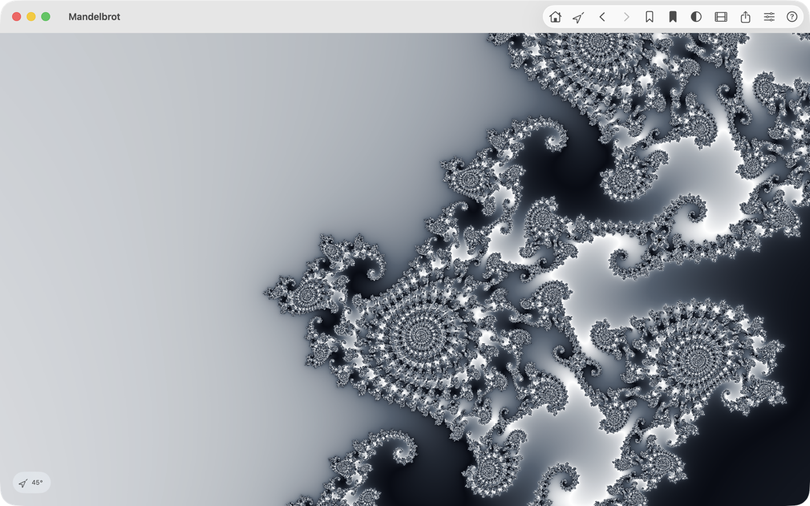
Strengths
- Strength One transform, not three recognisers. On iPhone, pan, pinch and twist are solved together from the two raw touches: rotate and scale about the previous midpoint, then translate it — the unique transform that pins both fingers. Three independent recognisers could not agree on a single result, and the difference is felt. source; motion confirmed smooth in the simulator
- Strength Inertia is handled with care: a quick lift keeps its fling, a held finish does not; trackpad momentum is left to AppKit rather than having a second inertia curve added on top; scroll interaction is only considered finished when momentum ends, so automatic depth waits for the view to settle. These are the details that separate smooth from nearly smooth. source
- Strength The Mac gesture set is properly Mac: drag to pan, scroll or pinch to zoom at the pointer, ⌘-scroll to zoom on a trackpad, two-finger twist with a snap near a right angle, double-click to zoom, shift-drag to frame a region. The iPhone set is properly iPhone: pinch, double-tap in, two-finger tap out. Neither is a translation of the other. observed on macOS for drag/scroll/double-click; shift-drag framing from source
- Strength The crosshair is drawn above the input surface but takes no hits; the input view owns the pointer and grabs the marker itself, so there is no gesture conflict between moving c and panning. A click that barely moves pins instead of dragging. source; hover tracking observed on macOS
Concerns / Problems
- Concern Shift-drag framing is undiscoverable. It is the most precise way to navigate and it exists only as a line in the Controls sheet. There is no cursor change on Shift, no hint, and no equivalent on iPhone at all. source + Controls sheet; not exercised (the automation harness cannot hold a modifier during a drag)
- Concern The companion panel eats the bottom-right corner of the gesture surface. On iPhone the inset is 169 × 169 pt with its own input view, so panning that starts in the lower-right quadrant drives the companion instead of the main view. There is no visual signal that the gesture surface has a hole in it. observed (panel geometry and its own input view)
- Concern Double-click zoom may fire on well-separated clicks. During one sequence, two clicks about 800 pt apart with a sheet interaction between them left the view zoomed 2× with the history advanced. This could not be reproduced deliberately. suspected — one occurrence, not confirmed
- Concern There is no “zoom out one step” gesture on macOS to match iPhone's two-finger tap; the Mac needs the keyboard or the scroll wheel. source
Recommendations
- Surface shift-drag: change the cursor to a crosshair while Shift is held over the canvas, and show the framed rectangle's resulting zoom factor as you drag.
- Make the iPhone companion inset visibly a separate surface — a thin border and a shadow already exist; add a small drag handle, and let a pan that begins on the panel's edge fall through to the main view. Better still, let the user move the inset between corners.
- Add ⌥-double-click (or a two-finger double-tap) as zoom-out on macOS, and document it in Controls.
- If the double-click behaviour is reproducible, require both clicks to fall within the system
double-click distance before treating
clickCount == 2as a zoom.
Priority
- P2Shift-drag framing has no discoverable affordance.
- P2The iPhone companion inset silently removes a corner of the exploration surface.
- P2Investigate whether a double-click zoom can fire from two distant clicks. Unconfirmed.
6. Julia companion
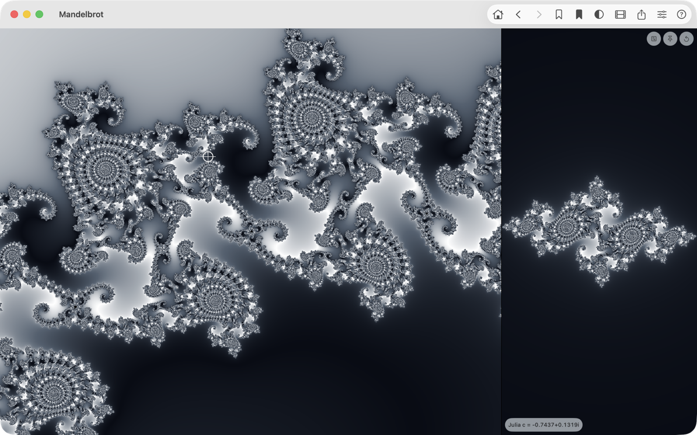
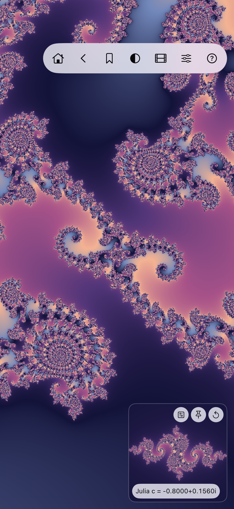
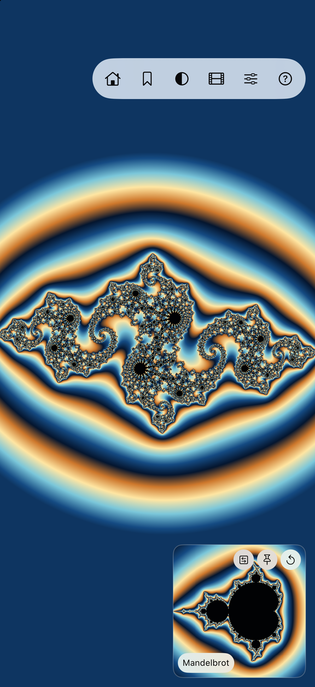
Strengths
- Strength On macOS, hover-driven c is genuinely delightful and is the clearest expression of the product's idea. It is fast enough to feel continuous. observed
- Strength The panel has its own pan, pinch and twist, and its own reset, so it is a real second viewer rather than a thumbnail. source; reset and swap buttons observed
- Strength The pin metaphor is right: drag the crosshair to move it, click it to pin, pinned is filled. Simple and physical. source; pin button observed
- Strength Swapping promotes the Julia set to the main view cleanly and the platform layout adapts correctly (side-by-side on Mac and iPad-class widths, corner inset on a compact phone). observed
Concerns / Problems
- Problem On iPhone the companion opens disconnected from the view.
Because there is no pointer to track,
juliaMarkeris nil until you touch the canvas, so the panel appears showing the built-in default c = −0.8 + 0.156i — a point nowhere near the current view — with no crosshair to explain the mismatch. The single most important idea of the feature (“this is the Julia set for that point”) is not communicated at the moment the feature is turned on. observed - Problem The c readout is fixed at four decimal places.
At 4×10³ it is already coarse; at 2×10⁹ every point on screen reads
-0.7436+0.1318i, so the caption conveys nothing and, worse, implies the companion is not changing. It should carry at least enough digits to distinguish adjacent pixels at the current scale. observed - Problem The panel's three buttons are 26 × 26 pt — well under the 44 pt minimum — and on macOS they are grey circles on black with very low contrast. observed in the AX hierarchy and screenshots
- Problem The whole panel is one accessibility label. The
container, its duplicate, all three buttons and the caption text all report
identifier: companionPanel, label: "Julia companion". VoiceOver announces four identical “Julia companion” buttons and cannot read the value of c. observed in the AX hierarchy - Concern In swapped mode the crosshair and the c caption both disappear, and the Mandelbrot inset is a non-interactive thumbnail — so you cannot pick a new c without swapping back. observed
- Concern The companion's own viewport starts at scale 1 in a tall panel, so a lot of the panel is empty black. It should fit the set to the panel. observed on macOS
- Concern Rotating the phone loses the crosshair. observed
macOS notes
Opening the companion narrows the Mandelbrot view from the right, cropping content rather than rescaling
it. That is defensible (it preserves scale), but there is no visible Divider() between the two —
it is black on black — so the split reads as one image until the Julia set appears.
iPhone notes
The inset is well placed for the thumb, but it is a fixed corner, it cannot be resized or moved, and it overlaps the exploration surface (see §5).
Recommendations
- On iPhone, seed the marker at the centre of the view when the companion is first shown, so the crosshair and the companion always agree with each other and with the current location.
- Format c from the current scale: enough significant figures to separate one screen pixel from the next, capped sensibly, in a monospaced style so it does not jitter.
- Raise the panel buttons to 44 pt hit targets (the visible circle can stay small via
.contentShape) and give them a material backing for contrast. - Remove the container-level
accessibilityLabel/accessibilityIdentifierfromCompanionPaneland label the three buttons individually — the correct strings already exist as theirhelptext. Expose the caption's real text. - Make the Mandelbrot inset interactive in swapped mode (tap to move c), and keep the c readout visible in both modes.
- Fit the companion's initial viewport to its panel aspect.
Priority
- P1On iPhone the companion opens on an unrelated default c with no crosshair — the feature's core idea is not communicated.
- P1Companion panel elements are all announced as “Julia companion”; the caption is unreadable to VoiceOver.
- P1Panel controls are 26 pt touch targets.
- P2Fixed 4-decimal c readout is meaningless below about 10⁴×.
- P2Swapped mode drops the crosshair and the c readout, and the inset is inert.
- P2Companion viewport does not fit its panel; divider invisible on macOS.
7. Places (gallery and bookmarks)
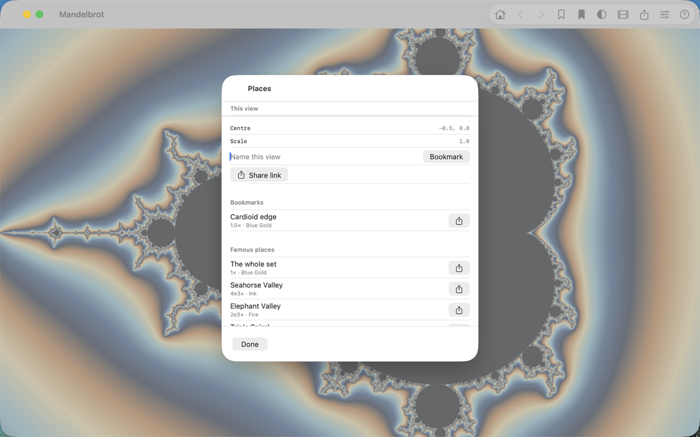
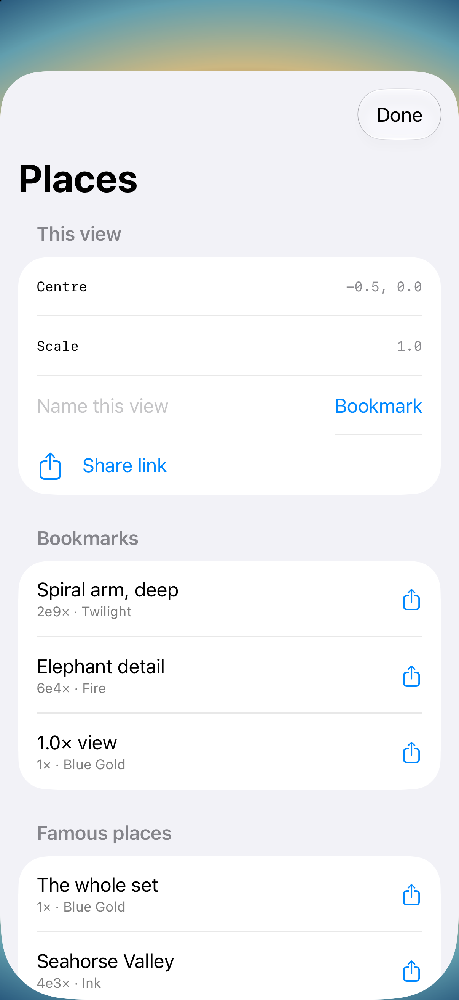
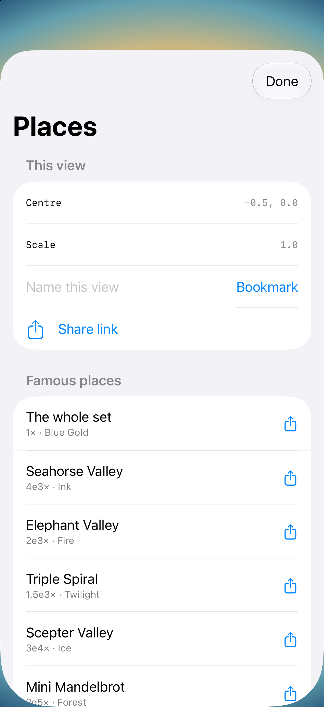
Strengths
- Strength Putting “this view”, the user's bookmarks and a curated gallery in one place is the right information architecture — the user does not have to know whether they are saving or loading. observed
- Strength The famous-places gallery is well chosen and each entry carries its own palette, so it doubles as a palette showcase. observed
- Strength Per-row share buttons let you send a place without visiting it. observed
Concerns / Problems
- Problem This is a picture app whose library has no pictures.
Every row is two lines of text. The app already contains
LocationThumbnail— it renders exactly this, and the Mac movie sheet uses it for its endpoints — but Places does not. observed - Problem The sheet does not use the Mac's space. It stayed the same size when the window went from 560 pt to 1280 pt wide, it is not resizable, and it clips the list mid-row (“Mini Mandelbrot” is sliced in half). Six of nine gallery entries are visible. observed at both window sizes
- Problem “Done” is at the bottom leading edge and there is no Cancel and no default button. On macOS the confirming button belongs bottom-trailing; on iOS it belongs in the navigation bar (where it is, correctly, on iPhone). The Mac inherits the iOS placement and then loses it to the bottom-left. observed
- Problem No empty state. With no bookmarks the section vanishes silently. A first-run user has no idea the feature exists. observed
- Problem Bookmarks and the built-in gallery are indistinguishable
apart from the section header, and there is no ordering control, no rename, no edit, and no detail view.
LocationStore.renameexists in the model but has no UI. Deletion is swipe-only and therefore invisible on macOS. observed; rename from source - Problem The same quantity is formatted two ways in one sheet.
“This view · Scale” shows
4000.0while the gallery row for the same place shows4e3×, and a bookmark of the home view shows1.0×against the gallery's1×. observed - Concern A row separator under the “Name this view / Bookmark” row is inset incorrectly and stops under the button, leaving a visible stub. observed on iPhone
Recommendations
- Give each row a rendered thumbnail using the existing
LocationThumbnail, and on macOS use a grid (a gallery of images) rather than a list — that is what the extra space is for. - Let the sheet grow: replace the fixed
.frame(minWidth: 380, minHeight: 460)with a resizable presentation sized to the window, and give the list a proper scroll area with no clipped row. - Move the confirming button to the bottom-trailing edge on macOS with
.keyboardShortcut(.defaultAction), and make Escape dismiss (see Design-system findings). - Add an empty state: one line of explanation and a “Bookmark this view” button, so Places teaches the feature.
- Add rename (it already exists in the store), reorder, and a context menu with Rename / Share / Delete — which also gives macOS a discoverable delete.
- Route every scale through one formatter (see Design-system findings).
Priority
- P1No thumbnails in the library of an image app, although the renderer for them already exists.
- P1Sheet ignores window size and clips its content on macOS. Systemic — shared sheet chrome.
- P1No empty state for bookmarks.
- P1No rename / reorder / context menu; delete is swipe-only and so unreachable on macOS.
- P2Scale formatted two different ways within one sheet. Systemic.
- P2Misaligned row separator under the naming row.
8. Bookmark creation and feedback
Three entry points: the text field inside Places, the toolbar's filled-bookmark button, and ⌘D.
Concerns / Problems
- Problem Bookmarking is completely silent from the toolbar and from
⌘D.
bookmarkCurrentView()adds the place and nothing else happens: no animation, no toast, no change to the toolbar icon, no sheet. The user has no way to know it worked short of opening Places. This is the app's clearest “did that work?” moment. source; the toolbar path was not separately re-tested, the in-sheet path was - Problem The first click on “Bookmark” after typing a name did nothing — it moved focus and re-selected the field text. A second click created the bookmark. A user who types a name, clicks once and sees nothing will reasonably conclude the feature is broken. observed once; reproduced only in that one sequence, so treat the exact trigger as unconfirmed
- Problem The default name is machine-generated and ugly.
With no name typed, the bookmark is called
"\(scaleDescription.prefix(12))× view"— “1.0× view” at home, and at depth something like “2.000000000× view”. observed - Concern The bookmark list is a nested
ObservableObject(let bookmarks: LocationStore) thatPlacesViewdoes not observe, so a change to it is not guaranteed to refresh the view. In this session the list did update, but only after a second interaction re-evaluated the body. source; the delayed update was observed but has an alternative explanation - Concern A bookmark silently captures palette, contrast, phase and iteration limit as well as position. That is good behaviour, but nothing in the UI says so, and restoring a bookmark therefore changes the user's colours without warning. source
Recommendations
- Acknowledge the action. The lightest correct treatment: fill the toolbar's bookmark glyph and show a brief capsule (“Saved to Places”) with an Undo/Name… affordance, using the same material capsule the app already uses for the precision and error notices.
- Make the toolbar bookmark button a toggle whose filled state means “this view is bookmarked”, which also resolves the two-identical-glyphs problem in §2.
- Default the name to the nearest famous place plus a depth (“Near Seahorse Valley · 4,000×”), and let the user rename in place.
- Add
@ObservedObject var bookmarks: LocationStore(or makeLocationStorean@Observabletype) toPlacesViewandMovieViewso the dependency is explicit. - Investigate the swallowed first click; committing the field on
onSubmitand triggering the same action would also let Return create the bookmark.
Priority
- P1Bookmarking from the toolbar or ⌘D gives no feedback of any kind.
- P1First click on “Bookmark” after typing was swallowed. Observed once; verify before fixing.
- P2Default bookmark name is machine-generated.
- P2Views do not observe the bookmark store they read from.
9. Share
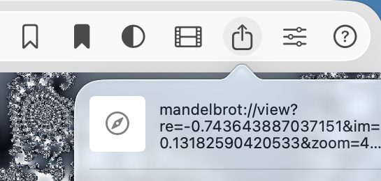
Concerns / Problems
- Problem Nobody without the app can open what you share. The
shared item is a
mandelbrot://view?…URL. In Messages or Mail it arrives as unclickable text. TheLocation(url:)initialiser already accepts anhttpsform with the same/viewpath, so the app is ready for a universal link — but the share path does not use one. observed; https acceptance from source - Problem No image is ever shared. Share offers a link only.
The vision document lists “export high-resolution images” and “wallpaper-worthy screenshots” as core, and the
tiled compositor that produces them exists and is exercised by
--renderon the command line — but there is no still-image export anywhere in the UI, on either platform, in any menu. observed — File menu, toolbar, all sheets, and both platforms checked - Concern The share item has no title, no preview and no subject, so the system
share sheet has nothing to show.
Transferablewith a preview image and a title would fix all three at once. observed - Concern On iPhone, Share exists only inside the Places sheet. observed
Recommendations
- Share a
Transferablethat carries a rendered still and the link, with aSharePreviewshowing the image and the place's name. One change makes the share sheet look right, makes the link openable as a picture, and delivers the “shareable” half of the product. - Switch the shared URL to the
httpsuniversal-link form (the parser already accepts it) with a web page that shows the image and offers the app, so a recipient without the app gets something. - Add Export Image… with a size/resolution choice, using the existing tiled compositor, to the File menu (⇧⌘E) and to the iPhone cluster's share affordance.
Priority
- P1No still-image export exists in the UI on either platform.
- P1Shared links use a custom scheme nobody else can open, with no preview or title.
- P2Share has no iPhone entry point outside Places.
10. Settings — Colour
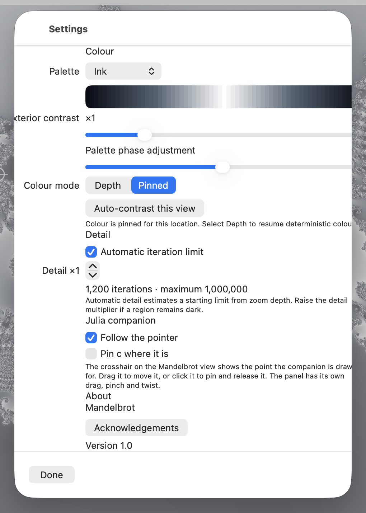
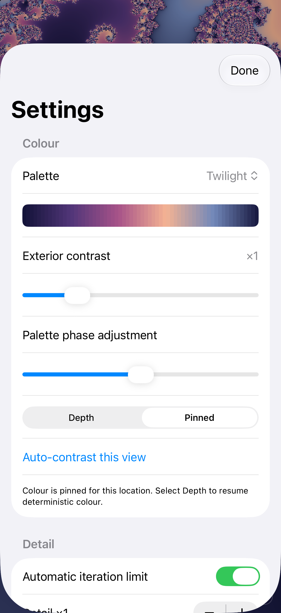
Strengths
- Strength The palette gradient strip under the picker is exactly right — it shows the thing being chosen. observed
- Strength Explanatory footers are written in plain language and are genuinely helpful (“Colour follows zoom depth deterministically; it never waits for tiles.”). observed
Concerns / Problems
- Problem The macOS layout is broken. Labels are clipped on the
left, controls overflow on the right, help text is truncated mid-word, and the
Sectionheaders (“Colour”, “Detail”, “Julia companion”, “About”) render as ordinary body text indented into the value column. Information is lost, not merely ugly. This is the app's only settings UI. observed at 1280 × 800; the sheet does not resize, so widening the window does not help - Problem The Colour mode segmented control cannot be set to
“Pinned”. Its setter is
{ $0 == 0 ? model.useDepthColouring() : () }— selecting Depth works, selecting Pinned does nothing. “Pinned” is only ever reached as a side effect of opening a location that carries pinned colour. A segmented control with an inert segment is a broken affordance. observed — the control showed “Pinned” selected after opening a shared link, and “Depth” on a fresh launch - Problem The control has no visible label.
Picker("Colour mode", …).pickerStyle(.segmented)drops its label in an iOS Form, so the user sees two words, “Depth” and “Pinned”, with no statement of what they apply to. observed on iPhone; on macOS the label does appear - Problem Sliders are orphaned from their labels. “Exterior
contrast ×1” is one row and its slider is a separate row beneath it; “Palette phase adjustment” is a bare
Textfollowed by a bareSlider, with no value readout at all. Neither slider has minimum/maximum labels or images. observed on both platforms - Concern The terminology is for the author, not the audience: “Exterior contrast”, “Palette phase adjustment”, “Depth”, “Pinned”, “Auto-contrast this view”. For the stated audience (“people who aren't programmers… no settings needed”) these are four different names for “make the colours look better”. observed
- Concern The gradient strip is built from 64 discrete
Colorblocks, so a smooth palette is shown as visible bands — the opposite of what the renderer achieves. observed - Concern Opening any shared link puts colour into “Pinned”, because a
URL without a
colourparameter yieldsautomaticColour == nil. The user sees the app in a mode they did not choose and cannot re-enter. observed
macOS notes
The root cause of the clipping is the fixed .frame(minWidth: 320, idealWidth: 420, minHeight: 350)
applied to a NavigationStack { Form } whose macOS layout wants a label gutter plus a full-width
control column. The gutter pushes the content right, the frame refuses to grow, and both ends fall off. The
fix is structural, not cosmetic — see Design-system findings.
Recommendations
- Rebuild this screen for macOS as a settings window (a
Settingsscene with.formStyle(.grouped)), sized to its content and reachable from ⌘,. Let the iPhone keep the groupedForm. This is the single highest-value structural change in the app. - Put each slider in a row with its label and its value, using
Slider(value:in:) { Text("Exterior contrast") } minimumValueLabel: … maximumValueLabel: …, and give the phase slider a value readout to match contrast. - Replace the Depth/Pinned picker with a single toggle that the user can actually operate, for example “Match colour to zoom depth” on/off, where off means “keep the colours this location was saved with”. Make “Auto-contrast this view” the action that switches it off, and say so.
- Rename for the audience: Colour → Palette; Exterior contrast → “Colour spacing”; Palette phase adjustment → “Colour shift”; Auto-contrast this view → “Tune colours to this view”.
- Draw the palette preview as a real gradient (a
LinearGradientfrom the palette's stops, or anImagefrom the existing 1024-entry lookup table) so it matches the render. - Treat a link with no colour parameter as depth colouring, not pinned.
Priority
- P0The macOS Settings sheet clips labels, controls and help text on both edges and cannot be resized. Information is lost. Systemic — shared sheet chrome.
- P1“Pinned” segment cannot be selected; the control is inert in one direction.
- P1Sliders have no labels, no bounds and inconsistent value readouts. Systemic.
- P1Segmented control has no visible name on iPhone.
- P2Implementation terminology throughout the Colour section.
- P2Palette preview is banded; shared links land in “Pinned” unasked.
11. Settings — Detail
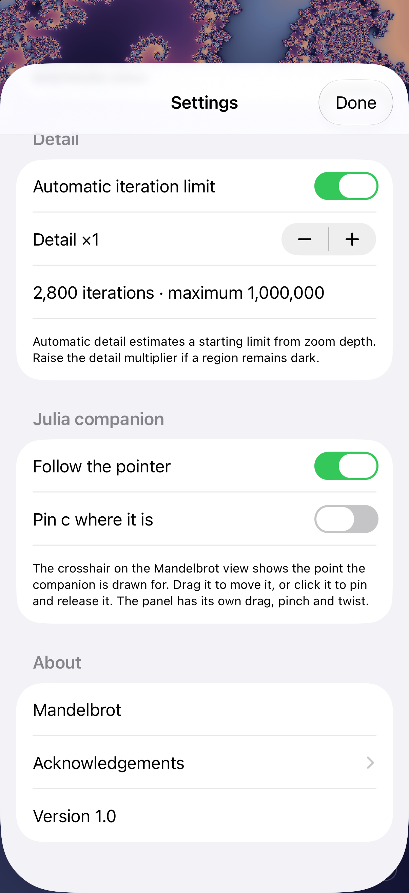
Strengths
- Strength Automatic by default, with a manual escape hatch, is exactly the right progressive disclosure for this control. The user never has to know what an iteration is. observed
- Strength The footer explains the symptom the control fixes (“Raise the detail multiplier if a region remains dark”), which is far more useful than explaining the maths. observed
- Strength Switching to manual reveals Halve/Double buttons and a numeric field, and the same operations exist as ⌘[ / ⌘]. observed on iPhone; Mac shows the stepper
Concerns / Problems
- Problem Three names for one thing in four rows: “Automatic iteration limit”, “Detail ×1”, “2,800 iterations · maximum 1,000,000”, and the menu calls the same operations “Increase Detail” / “Decrease Detail”. Pick one word for the user (“Detail”) and keep “iterations” for the developer panel. observed
- Concern “2,800 iterations · maximum 1,000,000” is a plain row inside the section, so it reads like a setting rather than a status line. It belongs in the section footer beside the explanation. observed
- Concern “×1” appears twice on adjacent screens meaning two unrelated things (detail multiplier and exterior contrast). observed
- Concern Changing detail has no in-view feedback: the render simply improves or degrades over the next second with nothing tying it to the control you moved. observed
Recommendations
- Standardise on Detail in all user-facing strings: “Detail: Automatic”, “More detail ×2”, and a footer reading “Currently 2,800 iterations (maximum 1,000,000).”
- Move the iteration count into the section footer.
- When detail changes, show the same capsule notice the app already uses (“Detail ×2 — 5,600 iterations”) for a second, so the cause and effect are connected.
Priority
- P2Three user-facing names for the iteration limit. Systemic — terminology.
- P2Status line presented as a settings row; no feedback when detail changes.
12. Settings — Julia companion and About
Concerns / Problems
- Problem Desktop language on the phone. The toggle is
literally “Follow the pointer” and the footer reads “Drag it to move it, or click it to pin and
release it.” An iPhone has no pointer and does not click. The Controls sheet gets this right with
#if os(iOS)variants; Settings does not. observed on iPhone - Problem Two toggles describe one axis. “Follow the pointer” and “Pin c where it is” are opposites presented as independent switches, so three of the four combinations are meaningless. observed
- Concern “Pin c where it is” exposes a raw mathematical variable with no explanation, in the section of the app aimed at the least technical user. observed
- Concern The About section is four bare rows — the app name as plain text, an Acknowledgements button, a version string, and (once unlocked) a Developer tools button. No icon, no copyright, no privacy or support link. For an App Store submission this is the screen reviewers look at. observed
- Concern The seven-tap unlock has no discoverable undo — once unlocked, the Developer tools row is permanent. observed
Recommendations
- Platform-condition the companion copy the way
HelpContentalready does: “Follow your finger” and “tap it to pin” on iOS. - Replace the two toggles with one picker: Julia point: Follows the pointer / Pinned — and say what the point is (“the point the companion is drawn for”) instead of naming it c.
- Give About the app icon, a copyright line, and a link to the project, and move Acknowledgements under the standard macOS About Mandelbrot panel as well.
- Let a long press on the version row re-lock developer tools.
Priority
- P1Mac-specific wording (“pointer”, “click”) shipped verbatim to iPhone. Systemic — microcopy.
- P2Two toggles for one mutually exclusive choice; raw variable c exposed.
- P2About section is too bare for App Store submission.
13. Acknowledgements
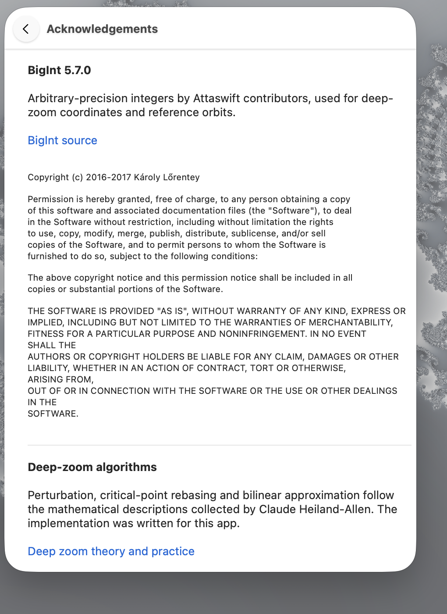
- Strength Exactly what this screen should be: what is borrowed, what it is used for, a link to the source, the full licence, and a separate credit for the algorithms with a link to the reference. Selectable text. observed
- Concern Pushing to this page removes the sheet's Done button, so the only way out is the back chevron (and Escape does not work — see §Design system). A user who lands here has one non-obvious exit. observed
- Concern The licence text keeps its source line breaks, so it wraps raggedly inside the panel. observed
Priority
- P2Detail page loses the sheet's dismissal control.
- P2Licence text reflows raggedly; strip hard wraps.
14. Controls (help)
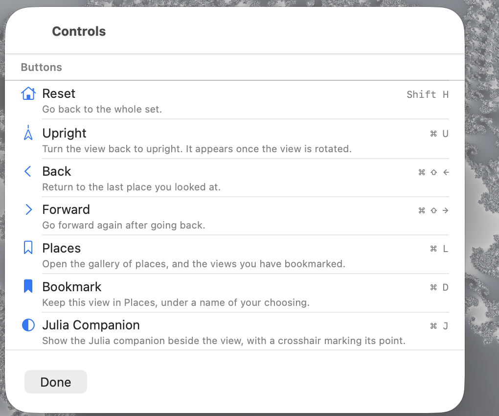
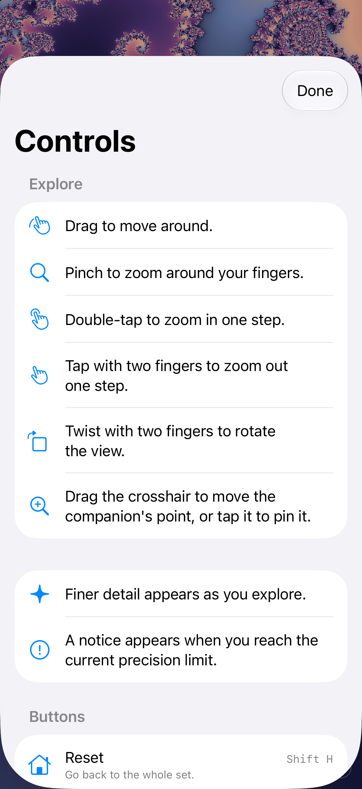
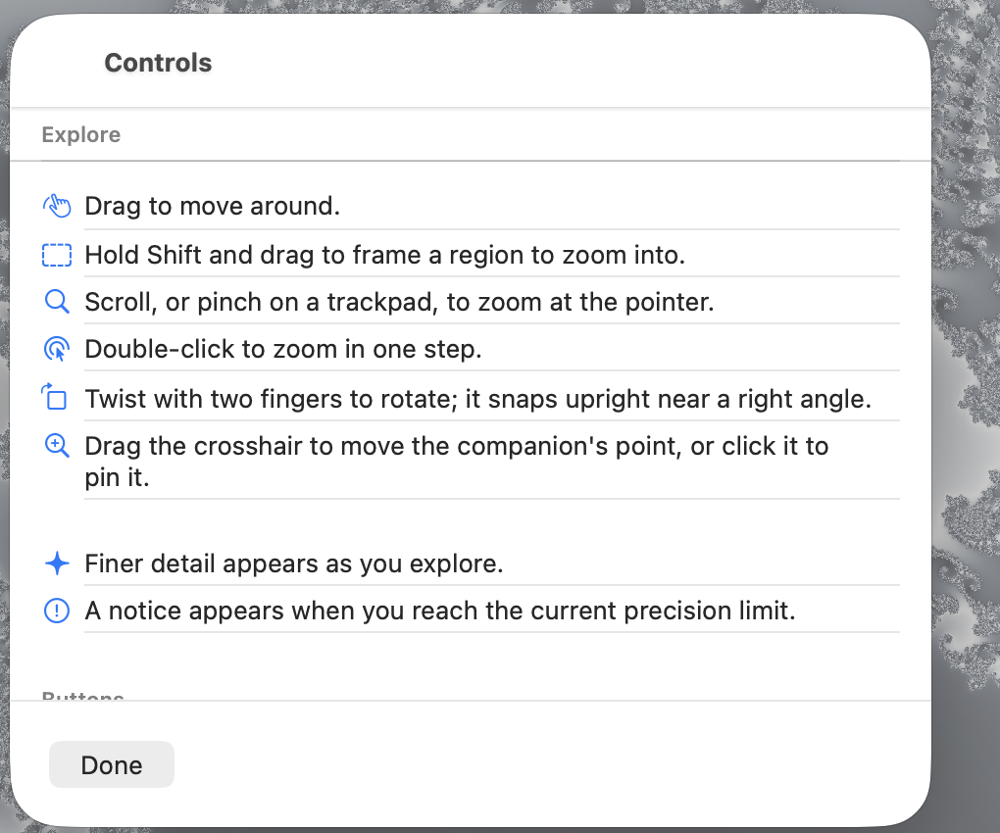
Strengths
- Strength The best-designed content in the app. Gestures first
because that is what the app is used with; one idea per row; then every button with the same sentence that is
its tooltip; then keyboard shortcuts, and only where there is a keyboard to press them on — the iOS build
watches for
GCKeyboardconnect/disconnect while the sheet is open. observed; the hardware-keyboard rows appeared in the simulator because the Mac keyboard is attached, which is correct behaviour - Strength The two gesture lists are genuinely different per platform, not one list with words swapped. observed
Concerns / Problems
- Problem This content is only reachable if you go looking. There is no first-run pass, no “show me” on first launch, and nothing in the exploration view points at it. The app's single best explanatory asset is behind the least-used icon. observed
- Concern On macOS only ~330 pt of the sheet is used in an 800 pt window, and the “Buttons” header is sliced in half at the bottom edge on first open — it looks like a rendering fault. observed
- Concern The second section (“Finer detail appears as you explore”, “A notice appears when you reach the current precision limit”) has no header, so it reads as an unexplained gap after the gestures. observed
- Concern Icons are tinted accent-blue here but monochrome in the toolbar, so the visual match between help row and real button is weaker than it could be. observed
Recommendations
- Use this content for a first-run pass: on first launch, show the three gesture rows as a brief, dismissible overlay over the live fractal (not a modal), with “More” opening the full sheet.
- Let the sheet grow to its content on macOS so no section header is clipped.
- Title the behaviour section (“What the view does on its own”).
- Match icon rendering to the toolbar.
Priority
- P1No first-run or onboarding state anywhere; excellent help is entirely opt-in.
- P2Sheet clips a section header and wastes Mac height. Systemic.
- P2Untitled section; icon rendering differs from the toolbar.
15. Zoom Movie — macOS
The app's most sophisticated interface, and the only one designed as a Mac dialog rather than inherited from the shared sheet chrome. It is reviewed here as four items: the journey card, the preview, the timeline, and the settings/output cards.
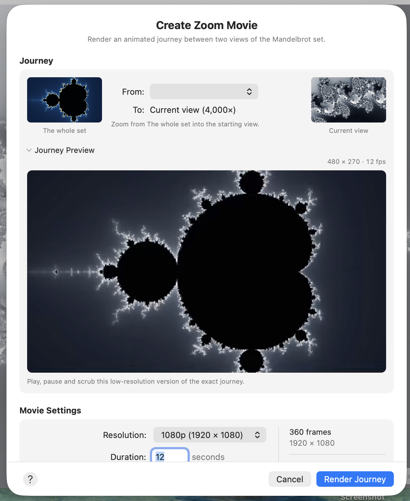
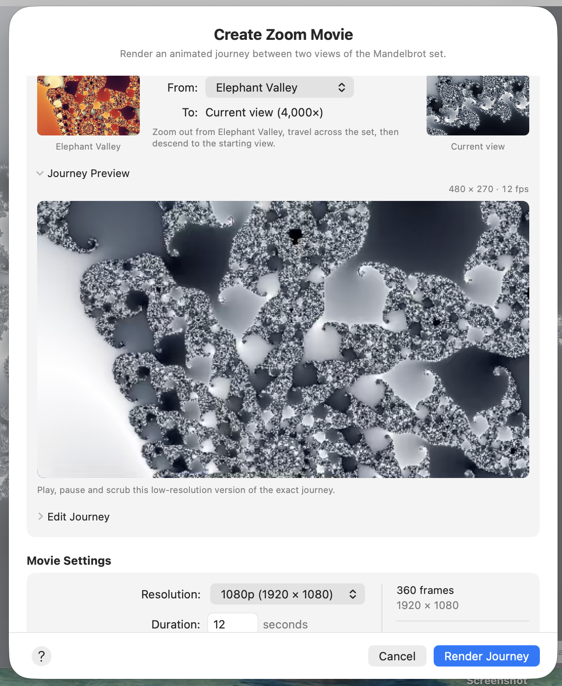
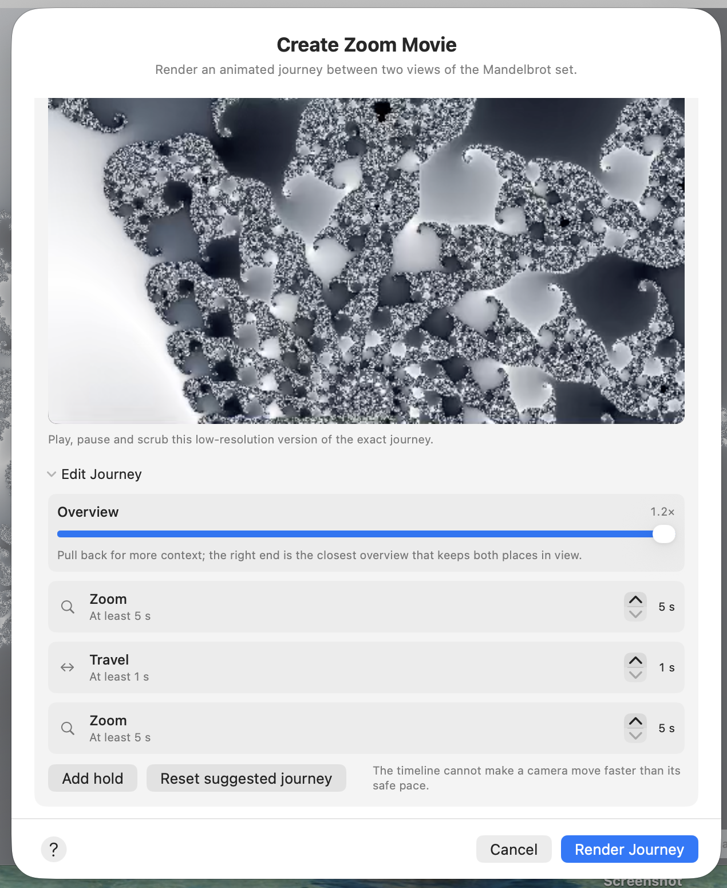
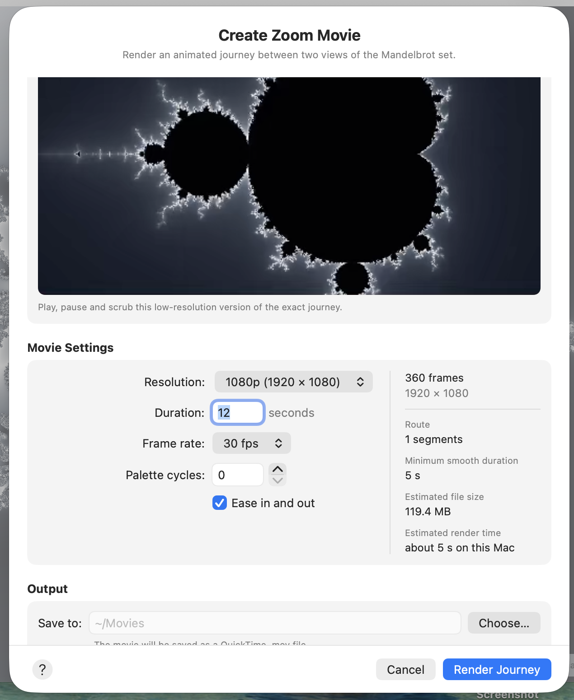
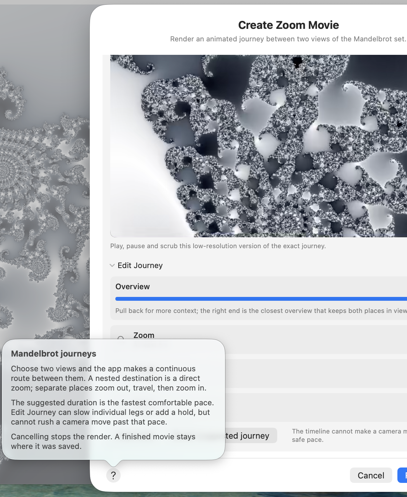
Strengths
- Strength This is what the rest of the app should look like. A dialog with a title and a one-line purpose, content in labelled cards, a right-aligned label gutter, a footer with a help button at the leading edge and Cancel / default action at the trailing edge, and three phases (settings, rendering, complete) that swap the footer cleanly rather than replacing the dialog. observed
- Strength Both endpoints are shown as pictures. You choose a journey by looking at where it starts and where it ends. observed
- Strength The journey preview is outstanding. A real 480 × 270 · 12 fps movie of the exact route, playable and scrubbable, regenerated whenever any input changes. It removes essentially all the guesswork from an expensive operation. observed, including regeneration after changing the start
- Strength The route is explained in a sentence that changes with the choice — nested destination = direct zoom; separate places = zoom out, travel, zoom in — and the timeline exposes it as editable segments with honest minimums (“The timeline cannot make a camera move faster than its safe pace”). Duration is raised automatically when a new route needs more. observed
- Strength Statistics are measured rather than asserted, the output folder is a real security-scoped choice that survives relaunch, and the format is stated (“saved as a QuickTime .mov file”). observed
Concerns / Problems
- Problem The From popup renders empty on open.
initsets_startChoice = State(initialValue: startingAt?.id), which isnilin app use, so thePickerhas no matching tag and shows blank whilestartsilently falls back to the first gallery entry. The dialog's primary input looks unset. observed - Problem The route description names the wrong endpoint. “Zoom from The whole set into the starting view” and “…then descend to the starting view” should both say the current view. It appears on every route. observed twice
- Problem The dialog is vertically cramped and clips mid-row. At 1280 × 800 the content area is ~450 pt and the Movie Settings card is cut through the middle of the Duration row; with both disclosure groups open you can see three timeline rows at a time. The size policy targets up to 820 pt but the sheet rendered around 590 pt. observed
- Problem The estimated file size is wrong by an order of magnitude. The dialog predicted 119.4 MB; the completion card, in the same dialog, reported 10.8 MB. A user choosing 4K will be told to expect roughly half a gigabyte for something that will be about 40 MB. The render-time estimate, by contrast, was close (“about 5 s”, actual ≈ 20 s wall clock including keyframes). observed — both figures read off the same render
- Concern The From menu mixes the built-in gallery and the user's bookmarks in one flat list with no separator or heading. observed
- Concern The two endpoint thumbnails render in each location's own palette, but the movie is rendered in the current colouring — so the pictures promise colours the movie will not have. observed: Elephant Valley thumbnail in Fire, current view in Ink
- Concern Timeline rows say “Zoom”, “Travel”, “Zoom” with no indication of which end each belongs to, and each row shows its stepper with the value repeated beside it and the minimum repeated below it — three numbers for one quantity. There is no way to delete a segment, and “Add hold” only appends at the end. observed
- Concern “Route: 1 segments”. observed
- Concern The preview video swallows scroll events, so the dialog cannot be scrolled while the pointer is over it. observed
- Concern “Save to” is a disabled
TextField; macOS hasNSPathControlfor this, which also gives a click-through to the folder. observed
Recommendations
- Initialise
startChoicetostartingAt?.id ?? Location.gallery[0].idso the popup always shows what the rest of the card already claims. - Fix the two route sentences to say “the current view”.
- Let the dialog use the height its own policy already computes; at minimum, never clip through the middle of a control row — pad the scroll content so it breaks at a card boundary.
- Recalibrate the file-size estimate against real output (the completion card measures it — feed that back), or present it as a range, or drop it. An estimate that is 11× out is worse than none.
- Split the From menu into “Famous places” and “Your bookmarks” sections, and render the endpoint thumbnails with the colouring the movie will actually use.
- Name each timeline segment by its endpoint (“Zoom out of Elephant Valley”, “Travel”, “Zoom into the current view”), collapse the three duration numbers into one editable field plus a minimum hint, and allow inserting and removing holds anywhere.
- Pluralise “segment(s)”, and swap the disabled path field for
NSPathControl.
Priority
- P1The From popup renders blank; the dialog's primary input looks unset.
- P1File-size estimate is ~11× the measured result.
- P2Route description names “the starting view” where it means the current view.
- P2Dialog clips through the middle of a control row; timeline is cramped.
- P2Endpoint thumbnails use palettes the movie will not use.
- P2Timeline rows are unnamed and show one duration three ways; holds only append.
- P2“1 segments”; From menu does not separate gallery from bookmarks; preview eats scroll; path shown in a disabled text field.
16. Zoom Movie — iPhone
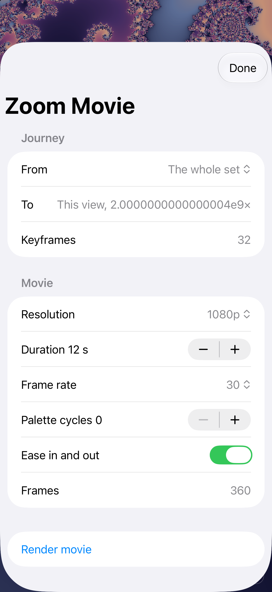
Concerns / Problems
- Problem This is a different and substantially weaker feature than the
Mac's. It uses the older
ZoomPath(direct descent only) rather thanJourney, so choosing a start that is not an ancestor of the current view does not produce a zoom-out/travel/zoom-in route — it produces the message “Zoom in further than the starting place.” There are no endpoint thumbnails, no preview, no timeline, no overview control, no statistics, no help, and no completion card. observed; the divergence is confirmed in the two source files - Problem A raw floating-point artefact is shown to the user:
“This view, 2.0000000000000004e9×”. The Mac has a formatter for exactly this
(
MovieSheetMac.zoom) which would print “2.0e9×”; the iPhone printsLocation.scaledirectly. observed - Problem No minimum-duration guard. The Mac raises the duration to the route's safe minimum and disables Render with an explanation and a one-click fix. The iPhone lets you render a 32-keyframe descent in 2 seconds with no warning. observed: duration defaults to 12 s with no relationship to the route; the guard exists only in the Mac sheet
- Problem Settings stay fully interactive during a render. The resolution picker, duration stepper, frame-rate picker, palette-cycle stepper and the ease toggle all remain live while the movie renders, and changing them has no effect on the running render. The Mac dims and disables them. observed mid-render
- Problem “Keyframes 32” is implementation vocabulary shown as a first-class fact to a non-technical user. observed
- Concern “Render movie” is a plain blue text row with no more weight than “Ease in and out”; the Mac has a prominent default button. Terminology differs too: “Render movie” vs “Render Journey”. observed
- Concern Nothing says where the movie goes. On iOS it is written to the temporary directory and only escapes via the share sheet — correct, but unstated, and a user who dismisses the sheet without sharing has lost the file. source + observed absence of any statement
- Concern There is no Cancel in the navigation bar, only Done, and dismissing the sheet mid-render leaves the render running with no progress indication anywhere in the app. observed structure; the dismiss-mid-render case was not run to completion
Recommendations
- Move
MovieSheetMac's model —Journey, the preview renderer, the thumbnails, the statistics, the minimum-duration guard, the completion outcome — into shared code, and keep only the presentation platform-specific. The iPhone should get the same journey planning expressed as a grouped form with a navigation-bar action, not a reduced feature. - Share the zoom formatter immediately; this is a one-line fix for a visible defect.
- Disable the settings section while
movies.isRendering. - Replace “Keyframes 32” with something meaningful, or remove it — the useful figure is duration and frame count, both already shown.
- Promote the action: a prominent button in a sheet footer or the navigation bar, labelled the same as the Mac.
- State the destination (“Saved to Photos” / “Share to keep it”) and offer to save to Photos on completion.
Priority
- P1iPhone movie creation is a different, weaker feature with a different route model. Systemic — the whole movie workflow.
- P1Raw float leaks into the UI (“2.0000000000000004e9×”).
- P1Settings remain live and ineffective during a render.
- P1No minimum-duration guard, so unusably fast movies can be rendered.
- P2“Keyframes” jargon; weak action affordance; destination unstated.
17. Render progress and completion
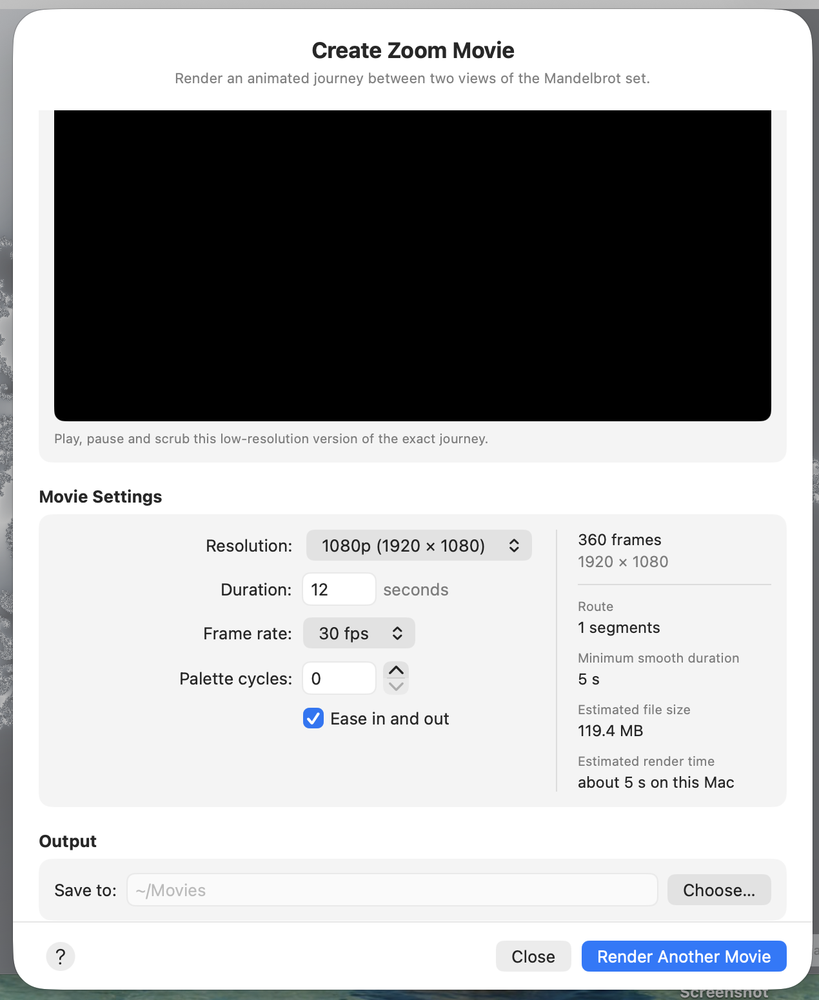
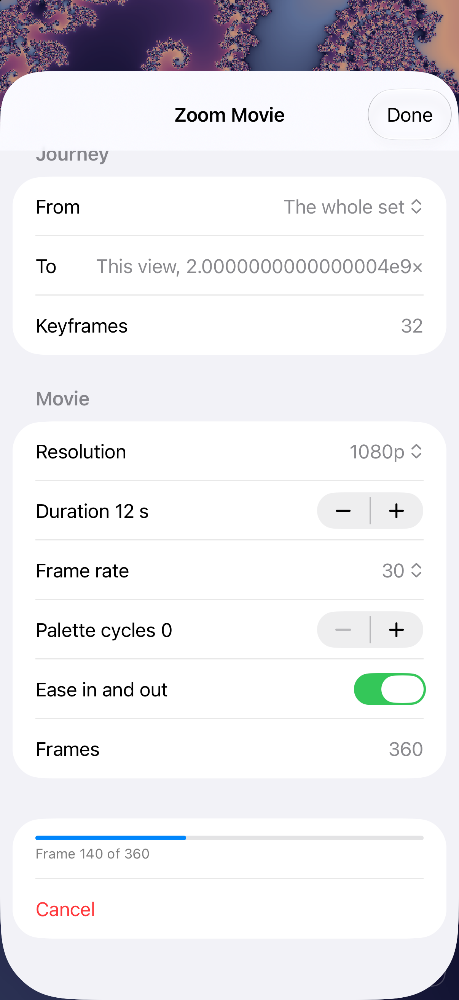
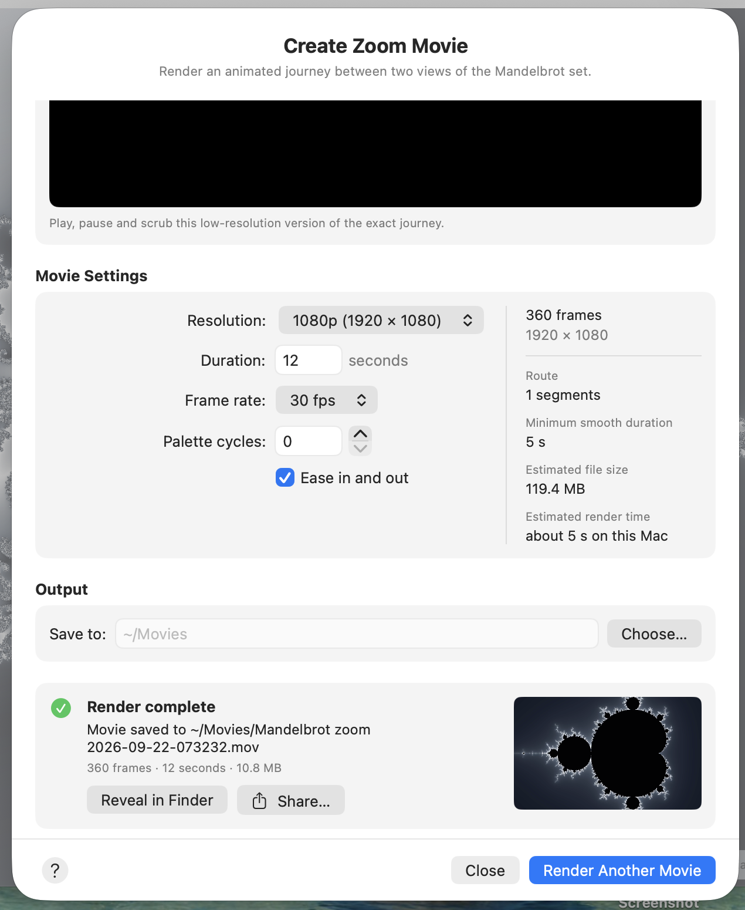
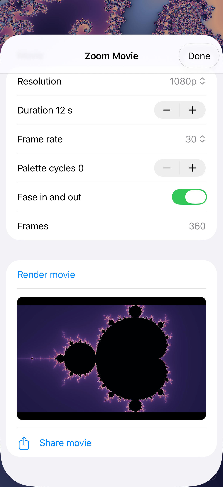
Strengths
- Strength On macOS the headline names whatever the render is actually doing and the quieter line carries the counter it is not on, so a keyframe stall is legible rather than looking like a hang. Progress is determinate and Cancel is always visible. observed
- Strength Dimming rather than replacing the settings is the right choice — the movie being made stays readable beside its own progress. observed
- Strength The viewer's tile cache is deliberately cancelled before a render so it does not compete for GPU and memory, and resumes on the first frame after the sheet closes. The user never sees this, which is the point. source
- Strength Both platforms play the finished movie in place before it goes anywhere. observed
Concerns / Problems
- Problem On iPhone, completion is announced by absence. The progress bar disappears, the button reverts, and a player materialises below the fold. No “Render complete”, no size, no duration, no statement of where it is. This is the single worst feedback moment in the app. observed
- Problem On macOS the completion card is below the fold too. The footer changes to “Close / Render Another Movie” while the card that explains what happened sits off screen until you scroll. observed
- Concern During and after a Mac render the Journey Preview slot shows an empty grey and then a black rectangle, still captioned “Play, pause and scrub this low-resolution version of the exact journey” — a caption that is no longer true. observed
- Concern Neither platform offers an estimated time remaining, only a percentage; for a 4K render that is the number the user wants. observed
- Concern The failure path could not be triggered in this session; from source it is a red caption in the settings area with no retry action. source — not exercised
Recommendations
- Give iPhone the same completion state: a card with a tick, “Render complete”, frames · duration · size, and
two actions (Share, Save to Photos). Reuse
MovieOutcome, which is already platform-neutral in everything but its file location. - Scroll to the completion card when a render finishes on macOS, or move the card directly above the footer.
- Collapse the preview slot during and after a render instead of showing an empty box with a stale caption.
- Add a time-remaining estimate derived from observed frame rate once ~10 % of frames are done.
- Give the failure state a Retry and, where the cause is known (disk full, unsupported size), say so.
Priority
- P1No success confirmation on iPhone when a movie finishes.
- P2macOS completion card is below the fold; preview slot shows a stale caption.
- P2No time-remaining estimate; failure state has no retry.
18. Developer tools, HUD and benchmarks
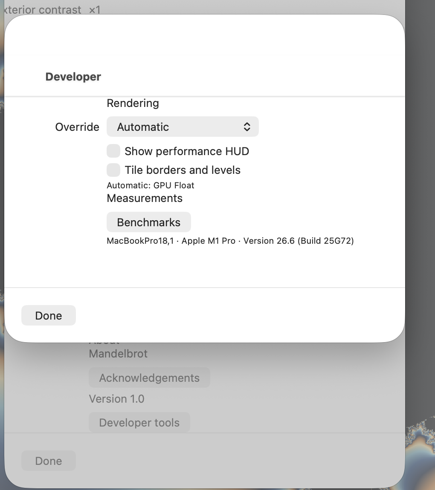
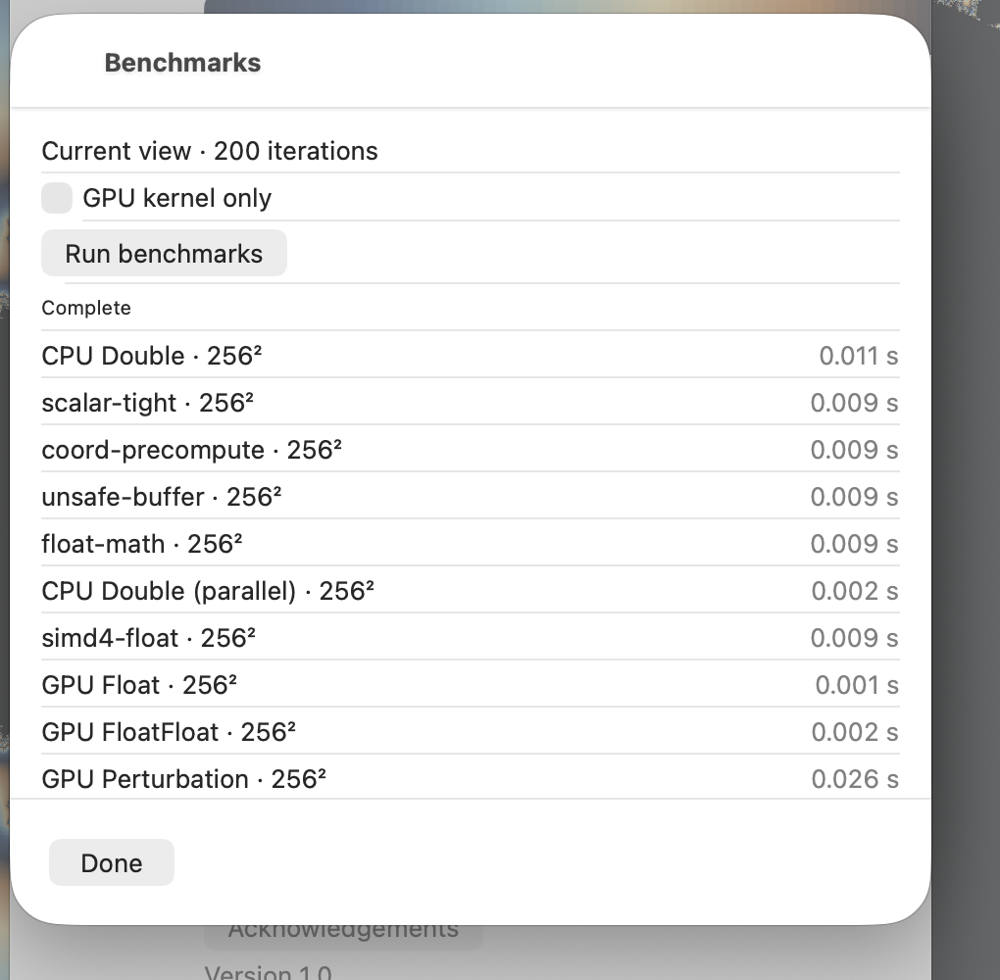
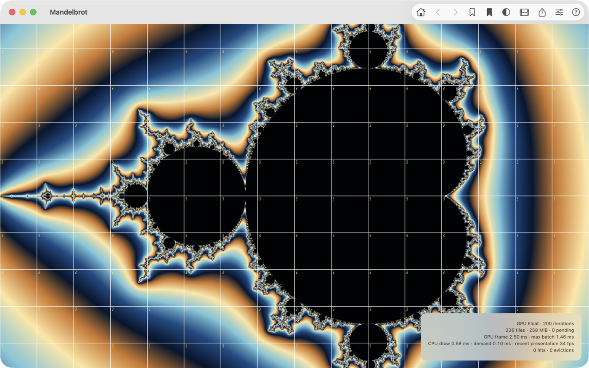
Strengths
- Strength Correctly hidden: seven taps on the version, a held Option key, or a launch argument. A casual user will never meet it. observed
- Strength The instrumentation is genuinely good — tiles, bytes, pending, GPU frame, longest batch, CPU draw, demand, presentation fps, hits and evictions, plus a tile-grid overlay and the current automatic renderer. observed
- Strength The benchmark reports the device and the exact viewport, disables Share until there are results, and turns the run into shareable Markdown. observed
Concerns / Problems
- Concern Settings → Developer → Benchmarks is a stack of three sheets. On macOS a developer panel should be its own window (it already has a Debug menu to open it from). observed
- Concern Once the HUD or tile overlay is on there is no way to turn it off from the view — no Debug menu toggle, no keyboard shortcut. observed
- Concern The unlock is one-way; there is no re-lock. observed
- Concern Benchmark rows use internal variant names (
scalar-tight,coord-precompute,unsafe-buffer,float-math,simd4-float). Acceptable in a developer panel, but the same sheet is reachable from the iOS build's Settings, which is one tap from a non-technical user's world. observed - Concern
model.status(“Complete”) is rendered where a section header would be, so the finished state reads as a heading. observed
Recommendations
- Make the developer panel a
Windowscene opened from the Debug menu on macOS, and keep the sheet only on iOS. - Add HUD and tile-overlay toggles to the Debug menu with shortcuts, so they can be turned off where they are seen.
- Let the benchmark sheet grow so “Share results” stays reachable.
Priority
- P2Three stacked sheets; developer panel should be a window on macOS.
- P2HUD and overlay cannot be dismissed from the view; unlock cannot be undone.
- P2Benchmark results push the Share action off the bottom of the sheet.
19. Error, empty and boundary states
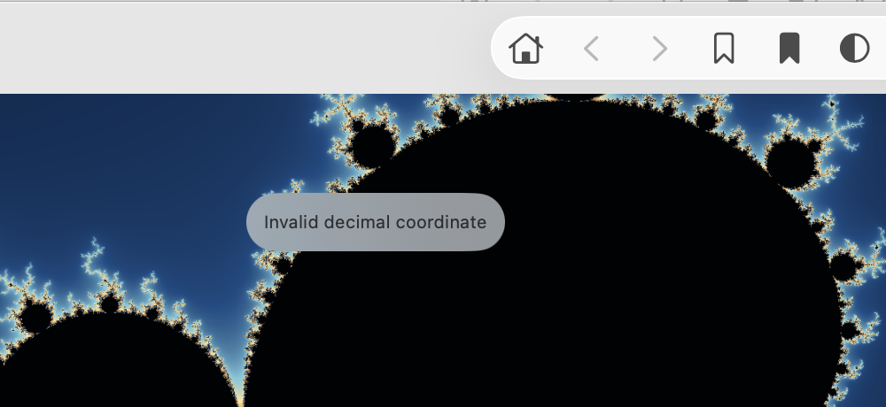
| State | Status | Assessment |
|---|---|---|
| Malformed location link | observed | Problem Shows String(describing: error) — “Invalid decimal coordinate”. Developer text, no explanation of what failed, no suggestion, no dismiss affordance, no timeout. |
Unopenable location (apply path) | source | Strength “That location could not be opened.” is written for a human — so the app already contains the right register; the URL path just does not use it. |
| No bookmarks | observed | Problem Section simply absent. No empty state. See §7. |
| First bookmark created | observed | Problem No acknowledgement. See §8. |
| Movie start not an ancestor (iPhone) | source | Problem “Zoom in further than the starting place.” — a dead end where the Mac would plan a travel route. |
| Movie duration below the safe minimum (Mac) | observed structure | Strength Clock-warning icon, the required figure, a one-click “Use N s” fix, and Render disabled. This is the app's best-designed validation. |
| Movie render cancelled | not exercised | Cancel is present and prominent in both sheets; the post-cancel state was not observed. |
| Movie render failure | not exercised | Concern From source: a red caption, no retry, no cause. |
| Tile render failure + Retry | not exercised | Concern From source, TileFailureNotice shows the raw store error plus a “Retry rendering” button, bottom-leading, over the fractal. Could not be provoked. |
| “Maximum detail reached” | not exercised | From source: a capsule at the top. Reaching the precision limit requires zooming past 2^13000 and was not achievable interactively. |
| Benchmark with no results | observed | Strength Share correctly disabled; Concern a large blank area with no placeholder. |
| Renderer unavailable during benchmark | not exercised | From source: status becomes “renderer unavailable” and the run stops silently. |
| Narrow Mac window | observed | Strength Toolbar overflow works. Concern Sheets do not adapt. |
| iPhone landscape | observed | See §20. |
| Accessibility text sizes | observed | Problem See Accessibility. |
Recommendations
- Never show
String(describing:)to a user. Map the two or three real failure causes to sentences — “That link is not a Mandelbrot location”, “That link's coordinates could not be read” — and keep the internal string for the log. - Give every transient notice a visible dismiss control and an automatic timeout, and say what the user can do next.
- Add the missing empty states: no bookmarks, no benchmark results, and no movie yet.
Priority
- P1Internal error strings shown to the user; notices have no visible dismiss affordance.
- P2Missing empty states for bookmarks and benchmark results.
- P2Render failure has no retry or cause.
20. Resizing and orientation
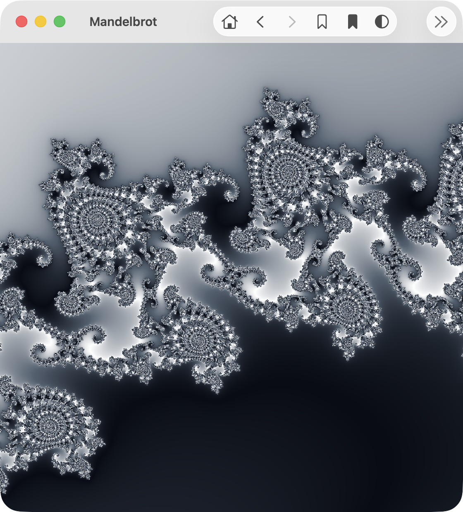
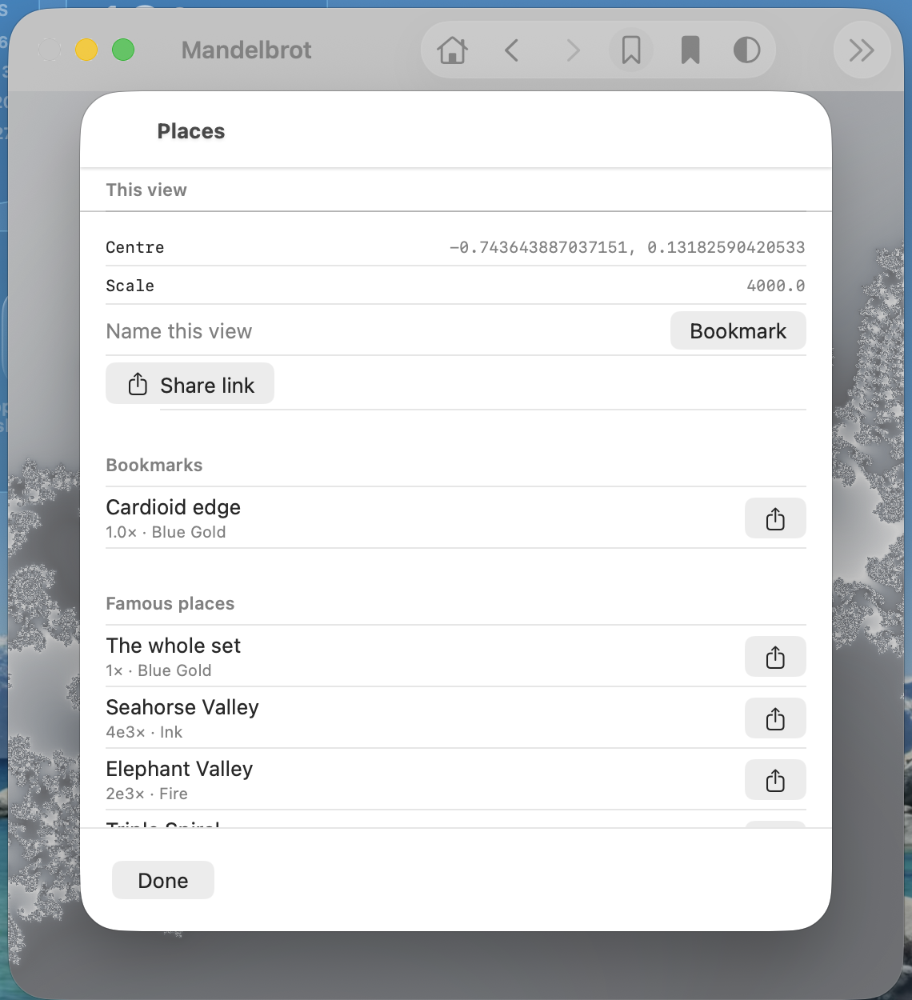
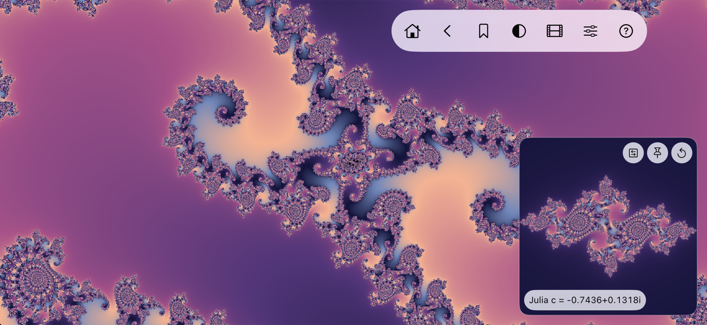
Strengths
- Strength The canvas resizes correctly and keeps its centre and scale; there was no flash of black and no visible reflow cost at any size tried. observed
- Strength The side-by-side / inset decision is made on horizontal size class, not on platform, so an iPad gets the Mac layout and a phone gets the inset. That is the right rule. source; both branches observed on their respective platforms
- Strength Landscape is handled without a separate layout and the safe areas are respected. observed
Concerns / Problems
- Problem No sheet responds to window size. Places, Settings and Controls are the same size in a 560 pt window and a 1280 pt one; only the movie dialog has a size policy. observed at both sizes
- Concern Rotating the phone clears the Julia crosshair, so the companion and the marker disagree until the next touch. observed
- Concern The companion takes a fixed 28 % of a Mac window. In a very wide window that is a great deal of Julia; in a narrow one the Mandelbrot view becomes a strip. It is not resizable by the user. observed / source
Recommendations
- Give the sheets a size relative to the window with a sensible minimum, and make them resizable where content can grow (Places especially).
- Recompute the marker from its model coordinate on layout change so rotation preserves it.
- Make the Mac split draggable with a persisted position, or at least clamp the panel to a pixel range rather than a fixed fraction.
Priority
- P1Sheets ignore window size on macOS. Systemic — shared sheet chrome.
- P2Crosshair lost on rotation; Mac companion split is not user-adjustable.
21. App icon and first run
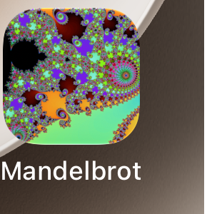
- Concern The icon is a dense fractal crop rendered at icon size, so it reads as coloured noise rather than a mark. It has no clear silhouette, no focal point, and its acid green / purple / orange palette matches none of the app's own seven curated palettes — so the first impression contradicts the product's best asset. observed
- Concern No dark or tinted icon variants were visible. observed on the Home Screen only
- Problem There is no first-run experience at all. A new user gets the whole set and six unlabelled icons. The app's gestures — the thing it is actually for — are discoverable only by guessing or by finding the Controls sheet. observed on a fresh install
Recommendations
- Design the icon as a mark: one recognisable silhouette (the cardioid-and-bulb outline is instantly readable) in one of the app's own palettes, with dark and tinted variants.
- Add a first-run pass built from the existing
HelpContent.gestures: three lines over the live fractal, dismissed by the first gesture the user makes. No modal, no carousel, no account — it should be gone in five seconds.
Priority
- P1No first-run or onboarding state.
- P2App icon does not read at icon size and is off-palette; no dark/tinted variants seen.
Workflow review
A. Exploration — launch → pan → zoom → refine → continue
Observed: launch is immediate and the whole set renders at once. Dragging, scroll-zoom at the pointer, double-click zoom and pinch all work smoothly and detail fades in. Back/Forward become available as you move, and history is recorded when a view settles and differs meaningfully — a well-judged rule that avoids a history full of near-duplicates.
Friction: the moment you stop, you cannot say where you are. There is no scale readout, so “continue exploring” has no anchor; deciding whether this is somewhere worth bookmarking means opening a sheet that covers it. On iPhone, the Back chevron appearing mid-session shifts every other control.
Especially successful: the gesture model. Nothing in this workflow feels mediated.
B. Bookmarking — find a place → bookmark → browse → restore
Observed: On Mac, clicking the filled-bookmark toolbar button appears to do nothing at all. Opening Places, typing a name and clicking Bookmark required two clicks before the entry appeared. The new bookmark then sits in a text-only list next to nine built-in places that look identical to it, with its scale formatted differently from theirs. Restoring it is an instant cut to somewhere else.
Friction, in order of cost: no confirmation → no thumbnail → no rename → no transition. A user cannot tell that the first step worked, and then cannot recognise the result.
State loss: restoring a bookmark silently replaces the current palette, contrast, phase and iteration limit. That is probably correct, but it is unannounced and not undoable except via Back.
C. Julia exploration — Mandelbrot location → Julia → explore → return
Observed on macOS: excellent. Toggle the companion, move the pointer, and the Julia set changes under it; click the crosshair to pin; the panel pans and zooms on its own; swap to promote the Julia set; swap back. Conceptual continuity is genuinely preserved.
Observed on iPhone: the same toggle produces a Julia set for a point you did not choose, with no crosshair anywhere, and the caption gives four decimal places of a number that needs ten. The connection between the two views — the entire point — is not made until you happen to touch the canvas.
Missing step: there is no way to bookmark, share or render a movie of a Julia set. It is a view, not a place, so it falls outside the rest of the app's vocabulary.
D. Movie creation — choose start → choose end → configure → preview → render → completion → share
Observed on macOS: the best workflow in the app. Open the dialog, see both endpoints as pictures, read a sentence describing the route, watch a real preview of it, open Edit Journey to slow a leg or pull the overview back, read measured statistics, choose a folder, render with two live counters and a Cancel, and finish on a card that tells you what was made and where. The only real breaks are the blank From popup at the start and the completion card being below the fold at the end.
Observed on iPhone: the same intent, a different product. The end is fixed to the current view (so “choose end” is not a step), the start list offers no pictures, a raw float is shown, there is no preview, no timeline, no statistics, no guard against an impossible duration, and completion is announced by a progress bar disappearing.
Cross-screen friction: on both platforms the movie's end is “this view”, so the whole workflow depends on the user having already navigated to the right place — but the exploration view never told them where that was, and the movie sheet is the first time they see it named.
E. Export — current visual state → controls → progress → result → share
This workflow does not exist. There is no still-image export in the UI on either platform. The only export is a movie, and the only share is a custom-scheme URL. A user who has found something beautiful can screenshot it or nothing.
F. Recovery and cancellation
Movie rendering can be cancelled from a prominent control on both platforms. Navigation has Back/Forward with a well-judged recording rule. Beyond that there is no undo: deleting a bookmark is immediate and irreversible (and unreachable on macOS), changing the palette or detail cannot be undone, and restoring a bookmark's colours cannot be reverted except by navigating back.
Cross-platform consistency
The goal is “the same application, expressed naturally in each platform's language”. The app achieves that
in the places where someone clearly sat down and designed for each platform, and misses it everywhere the
shared Form was simply shipped to both.
Expressed correctly on both
- Gestures. Two genuinely different, genuinely idiomatic sets, with two different help lists. The single best example of the principle in the codebase.
- Layout adaptation. Side-by-side companion by horizontal size class; corner inset on a compact phone; Mac gets a window toolbar, iPhone gets a floating capsule.
- Movie output destination. macOS gets a chosen, security-scoped folder that survives relaunch; iOS correctly has no folder and uses the share sheet. The code says so in a comment, and it is the right call.
- Resolution options. 4K on Mac, capped at 1080p on iOS.
- Keyboard. Shown on macOS always; on iOS only when a hardware keyboard is actually present, and it watches for connection changes while the sheet is open.
Desktop design leaked onto iPhone
- Settings' companion section says “Follow the pointer” and “click it to pin” on a phone.
- The primary controls are at the top of the screen — a window-toolbar position, not a phone position.
- Places and Settings are the Mac's list structure with an iOS skin: the same nine-row gallery, the same row-level share buttons, the same inline “Bookmark” button rendered at 20 pt tall.
Mobile design enlarged onto macOS
- Every sheet is
NavigationStack { Form }with a navigation title and a Done toolbar button. On macOS that yields a phone-width panel, a title bar the platform does not use, Done at the bottom left, no Cancel, no default button, no Escape, and content clipped on both edges. NavigationLinkto Acknowledgements pushes inside a Mac sheet and removes its dismissal control.- Swipe-to-delete is the only way to remove a bookmark — a gesture macOS does not have.
Workflows that differ for no defensible reason
- Movie creation — two different route models and two different feature sets from two separate files. The Mac's journey planning, preview, timeline, statistics and completion card are all absent on iPhone. Nothing about the phone makes those impossible; the preview is 480 × 270 at 12 fps.
- Bookmark and Share — first-class toolbar items on Mac, buried in a sheet on iPhone.
- Render feedback — two counters, a percentage and dimmed settings on Mac; one counter and live settings on iPhone.
Terminology and icon mismatches
| Concept | macOS | iPhone |
|---|---|---|
| Start the render | “Render Journey” (prominent default button) | “Render movie” (plain list row) |
| The route | “Journey”, with segments and holds | “Journey” section, but “Keyframes 32” |
| Current zoom in the movie sheet | “Current view (4,000×)” | “This view, 2.0000000000000004e9×” |
| Dismiss a sheet | “Done”, bottom left, no Escape | “Done”, navigation bar (correct) |
| Bookmark action | Toolbar bookmark.fill + ⌘D + in-sheet button | In-sheet button only |
Recommendation
Adopt one rule and apply it mechanically: the model, the vocabulary and the states are shared; the
presentation is not. Concretely, Journey, MovieOutcome, the zoom formatter, the
minimum-duration guard, the preview renderer and the thumbnail renderer belong in shared code used by both
sheets; MovieSheetMac and MovieView should differ only in how they lay that out.
The same rule applied to Places and Settings would fix most of the macOS problems in this report.
Accessibility and resilience
Tested in this session
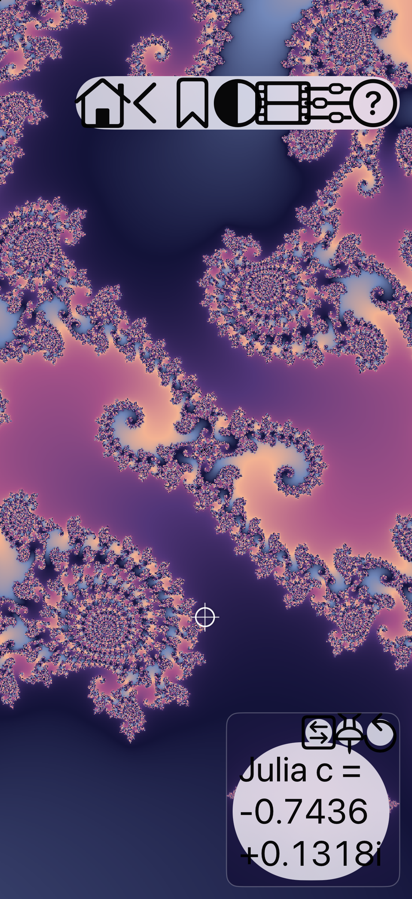
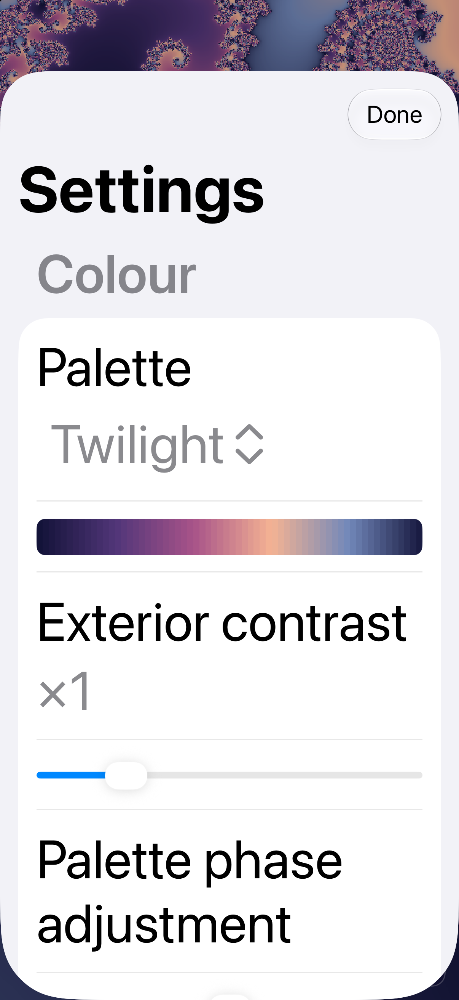
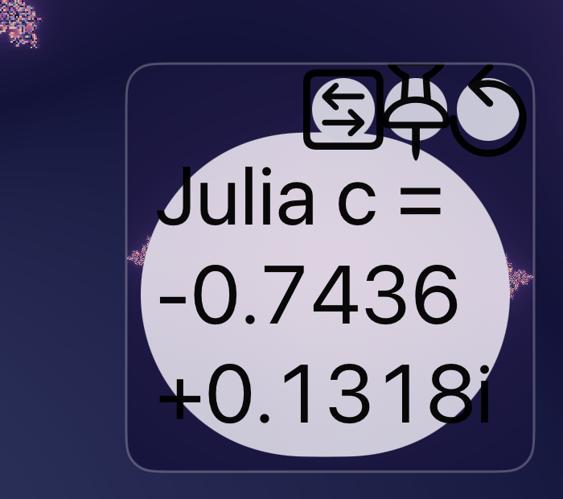
- Problem The iPhone control capsule and the companion panel break at
accessibility text sizes. At AX5 the glyphs grow past their fixed 44 × 44 pt frames and overlap
one another and the capsule background; the companion's three 26 pt buttons do the same; and the
“Julia c = …” caption capsule expands until it hides the entire Julia set. The buttons remain in the
accessibility tree at their original coordinates, so what the user sees no longer corresponds to what they can
tap. observed at
accessibility-extra-extra-large - Strength Every
Form-based sheet survives AX5 intact — Settings reflowed with labels above controls, no truncation and no clipping. That is a real, tested strength and it comes from using standard controls. observed - Problem The fractal is invisible to VoiceOver on macOS. The
window's accessibility tree is a toolbar of ten well-labelled buttons plus a single unlabelled
groupcontaining nothing. There is no description, no value, no actions. observed via the AX tree - Concern On iPhone the canvas is one opaque element labelled “Mandelbrot explorer”, with no value, no traits and no custom actions — so a VoiceOver user can know the explorer is there but cannot learn where they are, or pan and zoom. observed via the AX hierarchy
- Problem The companion panel reports five elements with one label. The container, its duplicate, all three buttons and the caption all announce “Julia companion”. observed via the AX hierarchy
- Problem Touch targets below 44 pt: companion panel buttons 26 × 26 pt; the “Bookmark” button in Places 77 × 20 pt. observed via the AX hierarchy
- Strength All ten macOS toolbar buttons and all seven iPhone cluster buttons carry correct accessibility labels, and the iPhone buttons additionally carry the explanatory sentence as a hint. observed
- Concern No keyboard focus was visible anywhere on macOS outside text fields; the canvas accepts first responder for key commands but shows no focus ring, and there is no Tab order through the toolbar. observed
Inferred from source, not tested
- Reduce Motion is not consulted anywhere. There is no
accessibilityReduceMotionreference in the UI code, yet the app has inertial flings, spring-based rotation snapping, refinement fades and a rotation animation. At minimum, flings and the refinement fade should be shortened when Reduce Motion is on. - Colour carries meaning without a second channel in two places: the green tick on the Mac completion card, and the red/orange error and warning captions. Both have accompanying text, which mitigates it; the movie timeline's segment icons (magnifier vs arrows) are a good example of doing it right.
- Localisation resilience is untested. Strings are inline literals rather than a string catalogue, and several layouts depend on short English labels — the movie sheet's 52 pt “From:”/“To:” gutter, the Mac settings' fixed label column, the 116 pt thumbnail captions. German or French would likely clip several of them. No localisation was attempted in this session.
- The crosshair is white with a 2 pt shadow and is drawn over content that is frequently white. It was legible over mid-tones in testing; over the bright interior bands it will not be.
Recommendations
- Cap the control glyphs and the companion caption with
.dynamicTypeSize(...DynamicTypeSize.accessibility1)(or size them with@ScaledMetricagainst a ceiling) so the capsule stays coherent, and let the frames grow with the glyph rather than clipping. - Make the canvas an accessible element with a live value — “Centred on −0.743…, 0.131…, zoomed 4,000 times” —
and add
accessibilityAdjustableActionfor zoom plus custom actions for pan, so VoiceOver users can explore. On macOS, give theNSViewanaccessibilityRole, label and value. - Remove the container-level label on
CompanionPaneland label its children. - Raise the two sub-44 pt targets.
- Honour Reduce Motion for flings, fades and the rotation spring.
- Give the crosshair a dark outline or a blend mode so it is legible on any background.
- Move user-facing strings into a string catalogue before the layouts harden further.
Design-system findings
Most of this report collapses into five repeated causes. Fixing these is worth more than fixing the symptoms individually.
1. The shared sheet chrome P0 P1
Five screens — Places, Settings, Controls, Developer, Benchmarks — are
NavigationStack { Form/List }.navigationTitle(…).toolbar { Button("Done") } with a hard-coded
.frame(minWidth:…, idealWidth:…, minHeight:…). On iPhone this is correct and idiomatic. On macOS
it produces, every time:
- a fixed panel that ignores the window and cannot be resized;
- content clipped at the edges or through the middle of a row;
- Done at the bottom leading edge;
- no Cancel and no default button, so Return does nothing;
- Escape does not dismiss (verified on Settings, both at the root and after pushing to Acknowledgements);
- a navigation title bar macOS sheets do not use;
Sectionheaders rendered as unstyled body text;- an inconsistent label gutter, so some controls align to it and some do not.
Fix once: introduce a single PanelScaffold that is
NavigationStack { Form } on iOS and, on macOS, a VStack with a heading, a scrolling
Form().formStyle(.grouped) sized to the window, and a footer with Cancel plus a
.keyboardShortcut(.defaultAction) confirm — the shape MovieSheetMac already uses.
Settings should additionally become a real Settings scene reachable by ⌘,.
2. No slider or labelled-control convention P1
Sliders appear three times and are built three ways: a LabeledContent row followed by a bare
Slider row (Exterior contrast, with a value); a bare Text followed by a bare
Slider (Palette phase, with no value); and a labelled slider with an inline value in the movie
timeline's Overview. None has minimum/maximum labels. Steppers are similarly inconsistent: label-in-row on
iPhone, hidden-label-plus-separate-value on Mac, and hidden-label-plus-value-plus-minimum in the timeline —
three numbers for one quantity.
Fix once: one ValueSlider(title:value:in:format:) and one
ValueStepper used everywhere, each showing title, current value and bounds.
3. No scale formatter P1
The same quantity — how far you are zoomed in — was observed printed six different ways:
| Rendering | Where |
|---|---|
1.0 | Places → This view → Scale |
4000.0 | Places → This view → Scale, at Seahorse Valley |
1× | Places → Famous places row |
4e3× | Places → Famous places row, same place |
1.0× | Places → Bookmarks row, same place |
4,000× | Mac movie sheet, “Current view (4,000×)” |
2.0000000000000004e9× | iPhone movie sheet, “To” |
Fix once: MovieSheetMac.zoom(_:) is already the right function — plain digits
with grouping below about 10¹⁰ and a clean exponent above. Move it to the model and use it for every
user-facing scale. Show the raw decimal string only where precision matters (a copyable coordinate field).
4. Terminology drift P2
| One concept | Names in use |
|---|---|
| Iteration limit | “Automatic iteration limit”, “Detail ×1”, “iterations”, “Increase Detail” |
| A saved view | “Bookmark” (verb + noun), “Place”, “This view”, “Location” (model), “view” |
| Making a movie | “Render movie”, “Render Journey”, “Zoom Movie”, “Create Zoom Movie” |
| Colour behaviour | “Depth”, “Pinned”, “Auto-contrast”, “Exterior contrast”, “Palette phase” |
| The movie's destination | “To”, “Current view”, “the starting view” (incorrectly), “This view” |
| Leaked jargon | “Keyframes”, “Perturbation”, “FloatFloat”, “Invalid decimal coordinate” |
Fix once: a short glossary, one word per concept, applied to every user-facing string. Suggested: Place (a saved view, whether yours or built-in), Detail, Palette, Colour spacing, Colour shift, Journey, Render.
5. Two tiers of design investment P1
There is exactly one screen in this app that was designed — MovieSheetMac — and it contains all
the conventions the rest of the app lacks: a title and purpose line, cards with headers, a right-aligned label
gutter, a statistics column, a footer with a leading help button and a trailing default action, phase-dependent
footers, dimmed-not-replaced content during work, and a completion card. Everything else is a
Form.
Fix once: extract that file's conventions into the shared scaffold above, then rebuild Places and Settings on it. That single move resolves the P0, most of the macOS P1s, and the cross-platform consistency findings simultaneously.
Prioritised recommendations
Grouped by theme within each priority. Order inside a group is not significant.
P0 — Critical
- P0Rebuild the macOS Settings presentation. Labels, controls and help text are clipped on both edges and the panel cannot be resized, so information is lost in the app's only settings screen. Make Settings a
Settingsscene with.formStyle(.grouped), sized to its content and reachable from ⌘,. (Systemic: the same chrome affects Places, Controls, Developer and Benchmarks.) - P0Make the iPhone controls survive accessibility text sizes. At AX5 the control capsule's glyphs overlap each other and spill outside the capsule, the companion's buttons do the same, and the companion caption covers the entire Julia image. Cap the icon scaling and let frames grow with their content.
P1 — Important
Platform conventions (macOS)
- P1Add Settings… / ⌘, to the app menu.
- P1Make Escape dismiss every sheet; add Cancel and a default button; move the confirming button to the bottom-trailing edge. Systemic.
- P1Validate every menu command against the focused model — Back, Forward, Upright and Swap are currently always enabled.
- P1Let sheets size themselves to the window and stop clipping content. Systemic.
- P1Give Places and the filled-bookmark toolbar item distinct glyphs, and stop conditional toolbar items reflowing the cluster.
Feedback and state
- P1Acknowledge a bookmark: fill the toolbar glyph and show a brief “Saved to Places” capsule with Undo/Name.
- P1Give iPhone a real movie-completion state (tick, frames · duration · size, Share, Save to Photos).
- P1Disable the iPhone movie settings while a render is running.
- P1Replace internal error strings with human sentences and give notices a visible dismiss control.
- P1Investigate the swallowed first click on “Bookmark” after typing a name; commit on Return as well.
Orientation in the fractal
- P1Show the current scale (and, on demand, the coordinates) in the exploration view on both platforms. Use
.navigationSubtitleon macOS. - P1On iPhone, seed the Julia marker at the view centre when the companion opens so the crosshair and the companion always agree.
Cross-platform parity
- P1Share the journey model, preview, thumbnails, statistics and duration guard between the two movie sheets; keep only presentation platform-specific. Systemic.
- P1Share the zoom formatter — this alone removes “2.0000000000000004e9×”. Systemic.
- P1Add Bookmark and Share to the iPhone control cluster, and move the cluster into the thumb arc.
- P1Platform-condition the Settings companion copy (“pointer”/“click” on a phone).
Missing capability
- P1Add still-image export using the existing tiled compositor: Export Image… (⇧⌘E) on macOS and a share action on iPhone.
- P1Share a
Transferablecarrying a rendered still plus anhttpsuniversal link, with aSharePreview. - P1Add a first-run pass built from the existing gesture help.
- P1Add an empty state for bookmarks; add rename, reorder and a context menu (which also gives macOS a discoverable delete).
- P1Put thumbnails in Places using the existing
LocationThumbnail.
Controls and correctness
- P1Replace the Depth/Pinned segmented control with a control the user can actually operate in both directions, and give it a visible name on iPhone.
- P1Adopt one slider/stepper pattern with title, value and bounds. Systemic.
- P1Initialise the movie sheet's From popup so it is never blank.
- P1Recalibrate or remove the movie file-size estimate (observed 119.4 MB predicted vs 10.8 MB actual).
Accessibility
- P1Make the fractal an accessible element with a live value and adjustable zoom on both platforms.
- P1Label the companion panel's children individually instead of labelling the container.
- P1Raise the two sub-44 pt touch targets (companion buttons, the Places “Bookmark” button).
P2 — Polish
Motion and continuity
- P2Animate jumps to a place or bookmark as a short continuous zoom; honour Reduce Motion.
- P2Honour Reduce Motion for flings, refinement fades and the rotation spring.
- P2Preserve the Julia crosshair across device rotation; restore the last location on launch.
Microcopy
- P2Fix “Zoom from X into the starting view” → “the current view” (both route descriptions).
- P2Fix “Route: 1 segments”.
- P2Adopt one word per concept (see the glossary in Design-system findings): Detail, Place, Journey, Palette, Colour spacing, Colour shift.
- P2Replace “Keyframes 32”, “Pin c where it is” and “Exterior contrast” with audience-facing language.
- P2Name each movie timeline segment by its endpoints; title the untitled Controls section.
- P2Give bookmarks a meaningful default name instead of “1.0× view”.
Layout and visual polish
- P2Never clip a sheet through the middle of a control row — break at card boundaries.
- P2Draw the palette preview as a real gradient rather than 64 blocks.
- P2Fix the misaligned row separator under the Places naming row.
- P2Collapse the movie preview slot during and after a render instead of showing an empty box with a stale caption; scroll to the completion card.
- P2Fit the Julia companion's initial viewport to its panel; make the Mac split draggable; give the companion buttons a material backing.
- P2Give the crosshair a dark outline so it is legible on bright regions; give the iPhone capsule a fixed minimum contrast.
- P2Redesign the app icon as a readable mark in one of the app's own palettes, with dark and tinted variants.
Structure and menus
- P2Group the Explore menu with separators; consider a View menu for zoom, rotation and detail.
- P2Give Reset View a command-key shortcut and review the unmodified arrow-key bindings against text entry.
- P2Group the macOS toolbar and set overflow priorities; allow customisation.
- P2Make the developer panel a window on macOS; add HUD and tile-overlay toggles to the Debug menu; let the unlock be undone.
- P2Separate “Famous places” from “Your bookmarks” in the movie From menu; render endpoint thumbnails in the colouring the movie will use.
- P2Add a time-remaining estimate and a retry on the render failure state; add empty states for benchmarks.
- P2Add zoom-out by gesture on macOS; surface shift-drag framing with a cursor change.
- P2Move user-facing strings into a string catalogue; strip hard wraps from the licence text; give About an icon and links.
- P2Let the Acknowledgements page keep a dismissal control.
- P2Investigate whether a double-click zoom can fire from two distant clicks. Unconfirmed.
Suggested next-pass sequence
This is sequencing by dependency and blast radius, not by severity. Each stage makes the next cheaper.
- Establish the shared conventions. Extract
MovieSheetMac's dialog shape into aPanelScaffold; add the shared zoom formatter, theValueSlider/ValueStepperpair, and the glossary. Nothing user-visible ships yet, but every later stage becomes a small change instead of a rewrite. - Rebuild Settings and Places on it, and add the
Settingsscene with ⌘,. This clears the P0, the Escape/Done/Cancel family, the sheet-sizing family, and most of the macOS platform-idiom findings in one pass. Add the Places thumbnails and empty state while the file is open. - Fix high-impact exploration UX. The scale readout, the bookmark acknowledgement, the iPhone control cluster's position and contents, stable toolbar item positions, and the first-run pass. These are the changes a friend picking up the phone would notice first.
- Unify the movie workflow. Move
Journey, the preview, thumbnails, statistics, the duration guard andMovieOutcomeinto shared code and rebuildMovieViewon them. Fix the blank From popup, the route wording and the file-size estimate on the way through. - Build the export workflow. Still-image export, the
Transferableshare with a preview, and the universal link. This is the largest piece of genuinely missing product and it depends on the share and menu structure settled in stages 2–3. - Accessibility pass. Dynamic Type ceilings on the overlay controls, the canvas as an accessible adjustable element, companion labels, touch targets, Reduce Motion, and the string catalogue. Doing this after the layouts have settled avoids doing it twice.
- Polish. Transitions between places, the icon, the palette preview, menu grouping, crosshair contrast, the developer window, and the remaining microcopy.
Audit coverage and limitations
Exercised interactively
- macOS: launch; navigation by drag, scroll-zoom, double-click and keyboard; rotation via ⌘⇧, and the compass; Places (empty and populated); creating a bookmark by name; the share popover; Settings and all four of its sections; Acknowledgements; Controls (both sections); the complete Zoom Movie workflow including a direct-descent render end to end, a planned travel journey, the journey preview with transport controls, the Edit Journey timeline, the overview slider, the help popover, render progress and the completion card; the Developer panel; the performance HUD and tile overlay; a full benchmark run; the malformed-link error notice; the Explore, File and app menus; the toolbar overflow at 560 pt; window resizing between 560 × 620 and 1280 × 800; and the window's accessibility tree.
- iPhone: launch on a clean install; opening a shared link; Places (empty and populated,
seeded); Settings (all sections, scrolled); Controls; the Julia companion including the crosshair, the
c readout and the swapped mode; the complete Zoom Movie workflow including a 360-frame render,
progress, and the completion state; portrait and landscape; the Home Screen icon; the accessibility hierarchy
at every step; and Dynamic Type at
accessibility-extra-extra-largeacross the explorer, the companion and Settings.
Not exercised — reviewed from source and labelled as such
- Shift-drag region framing on macOS. The automation harness cannot hold a modifier key
across a press-drag-release, so the selection rectangle was never seen. Its behaviour is described from
MacInputViewand the Controls sheet. - “Maximum detail reached.” Reaching the precision limit requires zooming past roughly 2^13000; not achievable by interaction.
- Tile render failure and the Retry control. Could not be provoked; no tile failure occurred in any session.
- Movie render failure, and cancelling a render. Cancel was seen and is prominent, but no render was cancelled to completion and no render failed.
- Swipe-to-delete a bookmark on iPhone. Not attempted.
- Julia swapped mode on macOS (it was exercised on iPhone) and the iPhone rotation compass.
- VoiceOver itself. Accessibility findings come from the live accessibility hierarchies on both platforms, which is a reliable proxy for labels, traits and geometry, but no screen reader was run.
- Localisation. No non-English locale was tested; the remarks are inferences from fixed-width label gutters and inline string literals.
- iPad. Out of scope for this audit, though the size-class logic means it takes the Mac layout branch.
Workarounds used
- Bookmarks were seeded into the simulator's
UserDefaults(xcrun simctl spawn … defaults write … Bookmarks) because the automation harness could not type into the text field. The seeded records use the app's ownLocationencoding, so the populated Places screenshots show genuine app rendering of genuine data. - Developer tools were unlocked on macOS by tapping the version row seven times — the
documented route — and briefly by writing
DeveloperToolsUnlockedandDeveloperMenuEnabled. - Deep locations were reached by the app's own
mandelbrot://links and by the Places gallery, not by simulated gestures, so the deep-zoom screenshots show genuine renders. - The iPhone 17 Pro simulator ran iOS 27.0 rather than 26.5, because that was the only runtime the device-interaction harness could attach to. The launch screen was captured on both runtimes and was identical; no other state was compared across them. The simulator's GPU handled every rendering path used, including the deep views; no fallback or mock content was needed.
Residual changes to the environment
- The repository is unmodified. No source file was edited;
git statusshows only the newreviews/claude-ui-ux/directory containing this report and its assets. - The Mac app's
Bookmarks,DeveloperToolsUnlockedandDeveloperMenuEnabledpreferences were written during the audit and have been deleted again. The app's own saved window frame was updated by normal use and has been left alone. - One movie file was rendered to
~/Movies(Mandelbrot zoom 2026-09-22-073232.mov, 10.8 MB) as part of testing the export workflow. It has been left in place rather than deleted, since it sits in the user's own Movies folder. - The iPhone 17 Pro (iOS 27) simulator still has the app installed with the seeded bookmarks and is left
booted. Erase it with
xcrun simctl erase 224ADF74-F91F-49C1-AD68-6F661661C9A5if a clean state is wanted.